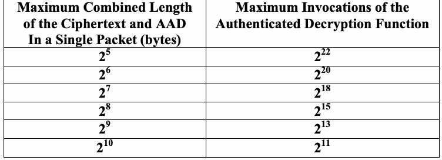
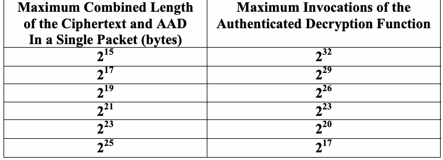

NIST Special Publication · PDF 原文抽出
Recommendation for Block Cipher Modes of Operation: Galois/Counter Mode (GCM) and GMAC
Galois/Counter Mode（GCM）とGMAC
NIST SP 800-38D（Recommendation for Block Cipher Modes of Operation: Galois/Counter Mode (GCM) and GMAC）の英文と日本語訳を段落ごとに並べた閲覧用ページです。認証付き暗号方式GCMとメッセージ認証コードGMACについて、入力形式、暗号化・認証、復号・検証の手順、必要なパラメーター、セキュリティ上の要件および試験例を示します。 翻訳は非公式です。要件の確認にはNIST の正式版 PDFを参照してください。
PDF から抽出した原文は原本との照合待ちです。
PDF p.2: 抽出できる文字が少ないため OCR または画像の照合が必要
PDF p.19: 二段組の可能性があるため読み順を原本と照合してください
PDF p.20: 二段組の可能性があるため読み順を原本と照合してください
PDF p.21: 二段組の可能性があるため読み順を原本と照合してください
PDF p.22: 二段組の可能性があるため読み順を原本と照合してください
PDF p.23: 二段組の可能性があるため読み順を原本と照合してください
PDF p.24: 二段組の可能性があるため読み順を原本と照合してください
PDF p.25: 二段組の可能性があるため読み順を原本と照合してください
PDF p.26: 二段組の可能性があるため読み順を原本と照合してください
Recommendation for Block
ブロックに関する勧告
未レビュー訳NIST Special Publication 800-38D November, 2007
NIST特別刊行物800-38D 2007年11月
未レビュー訳Cipher Modes of Operation: Galois/Counter Mode (GCM)
暗号利用モード：ガロア／カウンターモード（GCM）
未レビュー訳and GMAC
およびGMAC
未レビュー訳Morris Dworkin
Morris Dworkin
未レビュー訳C O M P U T E R S E C U R I T Y
コンピューターセキュリティ
未レビュー訳Recommendation for Block
ブロックに関する勧告
未レビュー訳NIST Special Publication 800-38D
NIST特別刊行物800-38D
未レビュー訳Cipher Modes of Operation: Galois/Counter Mode (GCM) and GMAC
暗号利用モード：ガロア／カウンターモード（GCM）およびGMAC
未レビュー訳Morris Dworkin
Morris Dworkin
未レビュー訳C O M P U T E R S E C U R I T Y
コンピューターセキュリティ
未レビュー訳Computer Security Division Information Technology Laboratory National Institute of Standards and Technology Gaithersburg, MD 20899-8930
コンピューターセキュリティ部門 情報技術研究所 米国国立標準技術研究所 Gaithersburg, MD 20899-8930
未レビュー訳November 2007
2007年11月
未レビュー訳U.S. Department of Commerce Carlos M. Gutierrez, Secretary
米国商務省 Carlos M. Gutierrez、長官
未レビュー訳National Institute of Standards and Technology James M. Turner, Acting Director
米国国立標準技術研究所 James M. Turner、所長代行
未レビュー訳Reports on Information Security Technology
情報セキュリティ技術に関する報告書
未レビュー訳The Information Technology Laboratory (ITL) at the National Institute of Standards and Technology (NIST) promotes the U.S. economy and public welfare by providing technical leadership for the Nation’s measurement and standards infrastructure. ITL develops tests, test methods, reference data, proof of concept implementations, and technical analyses to advance the development and productive use of information technology. ITL’s responsibilities include the development of technical, physical, administrative, and management standards and guidelines for the cost-effective security and privacy of sensitive unclassified information in Federal computer systems. This Special Publication 800-series reports on ITL’s research, guidance, and outreach efforts in computer security, and its collaborative activities with industry, government, and academic organizations.
米国国立標準技術研究所（NIST）の情報技術研究所（ITL）は、国の計測・標準インフラストラクチャに技術的リーダーシップを提供することで、米国経済と公共の福祉を促進している。ITLは、情報技術の開発と生産的利用を推進するため、試験、試験方法、参照データ、概念実証実装、および技術分析を開発する。ITLの責務には、連邦政府のコンピューターシステムにおける機微な非機密情報の費用対効果に優れたセキュリティとプライバシーのための、技術的、物理的、管理的、および運用管理上の標準とガイドラインの策定が含まれる。この特別刊行物800シリーズは、コンピューターセキュリティに関するITLの研究、ガイダンス、普及活動、および産業界、政府、学術機関との協力活動を報告するものである。
未レビュー訳Certain commercial entities, equipment, or materials may be identified in this document in order to describe an experimental procedure or concept adequately. Such identification is not intended to imply recommendation or endorsement by the National Institute of Standards and Technology, nor is it intended to imply that the entities, materials, or equipment are necessarily the best available for the purpose.
この文書では、実験手順または概念を適切に説明するため、特定の商業事業体、機器、または材料に言及する場合がある。このような特定は、米国国立標準技術研究所による推奨または保証を意味するものではなく、また、その事業体、材料、または機器が目的に対して必ずしも最良の選択肢であることを意味するものでもない。
未レビュー訳National Institute of Standards and Technology Special Publication 800-38D Natl. Inst. Stand. Technol. Spec. Publ. 800-38D 37 pages (November 2007)
米国国立標準技術研究所 特別刊行物800-38D Natl. Inst. Stand. Technol. Spec. Publ. 800-38D 37ページ（2007年11月）
未レビュー訳CODEN: NSPUE2
CODEN: NSPUE2
未レビュー訳Acknowledgements
謝辞
未レビュー訳The author wishes to thank David McGrew, who co-invented GCM and submitted it to NIST, and also the author’s colleagues who reviewed drafts of this document and contributed to its development, especially Elaine Barker, John Kelsey, Allen Roginsky, Donna Dodson, Tim Polk, and Bill Burr. The author also gratefully acknowledges the many comments from the public and private sectors to improve the quality and usefulness of this publication.
著者は、GCMを共同発明しNISTに提出したDavid McGrew、および本書の草稿を査読し作成に貢献した同僚、とりわけElaine Barker、John Kelsey、Allen Roginsky、Donna Dodson、Tim Polk、Bill Burrに謝意を表する。また、本刊行物の品質と有用性を高めるために寄せられた官民両部門からの多くのコメントにも、著者は深く感謝する。
未レビュー訳Abstract
要旨
未レビュー訳This Recommendation specifies the Galois/Counter Mode (GCM), an algorithm for authenticated encryption with associated data, and its specialization, GMAC, for generating a message authentication code (MAC) on data that is not encrypted. GCM and GMAC are modes of operation for an underlying approved symmetric key block cipher.
本勧告は、関連データ付き認証暗号化のアルゴリズムであるガロア／カウンターモード（GCM）と、暗号化されないデータに対してメッセージ認証コード（MAC）を生成するGCMの特殊化であるGMACを規定する。GCMおよびGMACは、承認された対称鍵ブロック暗号を基礎とする利用モードである。
未レビュー訳KEY WORDS: authenticated encryption; authentication; block cipher; confidentiality, cryptography; encryption; information security; mode of operation.
キーワード：認証付き暗号化、認証、ブロック暗号、機密性、暗号技術、暗号化、情報セキュリティ、利用モード。
未レビュー訳Table of Contents
目次
未レビュー訳1 PURPOSE — 1
1 目的 — 1
未レビュー訳2 AUTHORITY — 1
2 権限 — 1
未レビュー訳3 INTRODUCTION — 1
3 はじめに — 1
未レビュー訳4 DEFINITIONS, ABBREVIATIONS, AND SYMBOLS — 2
4 定義、略語、および記号 — 2
未レビュー訳4.1 DEFINITIONS AND ABBREVIATIONS — 2
4.1 定義および略語 — 2
未レビュー訳4.2 SYMBOLS — 5
4.2 記号 — 5
未レビュー訳4.2.1 Variables — 5
4.2.1 変数 — 5
未レビュー訳4.2.2 Operations and Functions — 6
4.2.2 演算および関数 — 6
未レビュー訳5 ELEMENTS OF GCM — 7
5 GCMの構成要素 — 7
未レビュー訳5.1 BLOCK CIPHER — 7
5.1 ブロック暗号 — 7
未レビュー訳5.2 TWO GCM FUNCTIONS — 7
5.2 2つのGCM関数 — 7
未レビュー訳5.2.1 Authenticated Encryption Function — 8
5.2.1 認証付き暗号化関数 — 8
未レビュー訳5.2.2 Authenticated Decryption Function — 9
5.2.2 認証付き復号関数 — 9
未レビュー訳5.3 PRIMITIVES FOR CONFIDENTIALITY AND AUTHENTICATION — 9
5.3 機密性および認証のためのプリミティブ — 9
未レビュー訳6 MATHEMATICAL COMPONENTS OF GCM — 10
6 GCMの数学的構成要素 — 10
未レビュー訳6.1 EXAMPLES OF BASIC OPERATIONS AND FUNCTIONS ON STRINGS — 10
6.1 文字列に対する基本演算および関数の例 — 10
未レビュー訳6.2 INCREMENTING FUNCTION — 11
6.2 インクリメント関数 — 11
未レビュー訳6.3 MULTIPLICATION OPERATION ON BLOCKS — 11
6.3 ブロック上の乗算演算 — 11
未レビュー訳6.4 GHASH FUNCTION — 12
6.4 GHASH関数 — 12
未レビュー訳6.5 GCTR FUNCTION — 13
6.5 GCTR関数 — 13
未レビュー訳7 GCM SPECIFICATION — 14
7 GCM仕様 — 14
未レビュー訳7.1 ALGORITHM FOR THE AUTHENTICATED ENCRYPTION FUNCTION — 14
7.1 認証付き暗号化関数のアルゴリズム — 14
未レビュー訳7.2 ALGORITHM FOR THE AUTHENTICATED DECRYPTION FUNCTION — 16
7.2 認証付き復号関数のアルゴリズム — 16
未レビュー訳8 UNIQUENESS REQUIREMENT ON IVS AND KEYS — 18
8 IVおよび鍵の一意性要件 — 18
未レビュー訳8.1 KEY ESTABLISHMENT — 19
8.1 鍵確立 — 19
未レビュー訳8.2 IV CONSTRUCTIONS — 19
8.2 IVの構成 — 19
未レビュー訳8.2.1 Deterministic Construction — 20
8.2.1 決定論的構成 — 20
未レビュー訳8.2.2 RBG-based Construction — 20
8.2.2 RBGに基づく構成 — 20
未レビュー訳8.3 CONSTRAINTS ON THE NUMBER OF INVOCATIONS — 21
8.3 呼び出し回数の制約 — 21
未レビュー訳9 PRACTICAL CONSIDERATIONS FOR VALIDATING IMPLEMENTATIONS — 22
9 実装の妥当性確認に関する実務上の考慮事項 — 22
未レビュー訳9.1 DESIGN CONSIDERATIONS — 22
9.1 設計上の考慮事項 — 22
未レビュー訳9.2 OPERATIONAL CONSIDERATIONS — 23
9.2 運用上の考慮事項 — 23
未レビュー訳10 CONFORMANCE — 24
10 適合性 — 24
未レビュー訳APPENDIX A: IMPORTANCE OF THE UNIQUENESS REQUIREMENT ON IVS — 25
付録A：IVの一意性要件の重要性 — 25
未レビュー訳APPENDIX B: AUTHENTICATION ASSURANCE — 26
付録B：認証保証 — 26
未レビュー訳APPENDIX C: REQUIREMENTS AND GUIDELINES FOR USING SHORT TAGS — 28
付録C：短いタグの使用に関する要件およびガイドライン — 28
未レビュー訳APPENDIX D: PROTECTION AGAINST REPLAY OF MESSAGES — 30
付録D：メッセージの再生に対する保護 — 30
未レビュー訳APPENDIX E: BIBLIOGRAPHY — 31
付録E：参考文献 — 31
未レビュー訳List of Figures
図一覧
未レビュー訳Figure 1: GHASH (X || X || ... || X ) = Y — 13
図1：GHASH (X || X || ... || X ) = Y — 13
未レビュー訳H 1 2 m m
H 1 2 m m
未レビュー訳Figure 2: GCTR (ICB, X || X || ... || X *) = Y || Y || ... || Y * — 14
図2：GCTR (ICB, X || X || ... || X *) = Y || Y || ... || Y * — 14
未レビュー訳K 1 2 n 1 2 n
K 1 2 n 1 2 n
未レビュー訳Figure 3: GCM-AE (IV, P, A) = (C, T) — 16
図3：GCM-AE (IV, P, A) = (C, T) — 16
未レビュー訳K
未レビュー訳Figure 4: GCM-AD (IV, C, A, T) = P or FAIL — 18
図4：GCM-AD (IV, C, A, T) = P or FAIL — 18
未レビュー訳K
未レビュー訳List of Tables
表一覧
未レビュー訳Table 1: Constraints with 32-bit Tags — 29
表1：32ビットタグの制約 — 29
未レビュー訳Table 2: Constraints with 64-bit Tags — 29
表2：64ビットタグの制約 — 29
未レビュー訳1 Purpose
1 目的
未レビュー訳This publication is the fourth Part in a series of Recommendations regarding modes of operation of symmetric key block ciphers.
本刊行物は、対称鍵ブロック暗号の動作モードに関する勧告シリーズの第4部である。
未レビュー訳2 Authority
2 権限
未レビュー訳This document has been developed by the National Institute of Standards and Technology (NIST) in furtherance of its statutory responsibilities under the Federal Information Security Management Act (FISMA) of 2002, Public Law 107-347.
この文書は、2002年の連邦情報セキュリティ管理法（FISMA）、公法107-347に基づく法定責任を遂行するため、米国国立標準技術研究所（NIST）が作成した。
未レビュー訳NIST is responsible for developing standards and guidelines, including minimum requirements, for providing adequate information security for all agency operations and assets, but such standards and guidelines shall not apply to national security systems. This guideline is consistent with the requirements of the Office of Management and Budget (OMB) Circular A-130, Section 8b(3), Securing Agency Information Systems, as analyzed in A-130, Appendix IV: Analysis of Key Sections. Supplemental information is provided in A-130, Appendix III.
NISTは、すべての政府機関の業務および資産に適切な情報セキュリティを提供するため、最低要件を含む標準およびガイドラインを策定する責任を負う。ただし、そのような標準およびガイドラインは国家安全保障システムに適用してはならない。本ガイドラインは、OMB Circular A-130のSection 8b(3)「政府機関情報システムの保護」の要件と整合しており、その要件はA-130 Appendix IV「主要条項の分析」で分析されている。補足情報はA-130 Appendix IIIに記載されている。
未レビュー訳This Recommendation has been prepared for use by federal agencies. It may be used by nongovernmental organizations on a voluntary basis and is not subject to copyright. (Attribution would be appreciated by NIST.)
本Recommendationは連邦政府機関での使用を目的として作成された。政府機関以外の組織も任意で使用でき、著作権の対象ではない。（NISTの出典を明記していただければ幸いである。）
未レビュー訳Nothing in this document should be taken to contradict standards and guidelines made mandatory and binding on federal agencies by the Secretary of Commerce under statutory authority. Nor should these guidelines be interpreted as altering or superseding the existing authorities of the Secretary of Commerce, Director of the OMB, or any other federal official.
本書のいかなる内容も、法定権限に基づき商務長官が連邦政府機関に義務付け、拘束力を持たせた標準およびガイドラインに矛盾すると解釈してはならない。また、本ガイドラインを、商務長官、OMB長官、その他の連邦政府職員の既存の権限を変更または置換するものと解釈してはならない。
未レビュー訳Conformance testing for implementations of the mode of operation that is specified in this Part of the Recommendation will be conducted within the framework of the Cryptographic Module Validation Program (CMVP), a joint effort of NIST and the Communications Security Establishment of the Government of Canada. An implementation of a mode of operation must adhere to the requirements in this Recommendation in order to be validated under the CMVP. The requirements of this Recommendation are indicated by the word “shall.”
本Recommendationの本編で規定する動作モードの実装に対する適合性試験は、NISTとカナダ政府のCommunications Security Establishmentが共同で取り組むCryptographic Module Validation Program（CMVP）の枠組みで実施される。CMVPの下で検証を受けるには、動作モードの実装は本Recommendationの要件に従わなければならない。本Recommendationの要件は「shall」という語で示される。
未レビュー訳3 Introduction
3 はじめに
未レビュー訳This Recommendation specifies an algorithm called Galois/Counter Mode (GCM) for authenticated encryption with associated data. GCM is constructed from an approved symmetric key block cipher with a block size of 128 bits, such as the Advanced Encryption Standard (AES) algorithm that is specified in Federal Information Processing Standard (FIPS) Pub. 197 [2]. Thus, GCM is a mode of operation of the AES algorithm.
本Recommendationは、関連データ付き認証暗号化のためのGalois/Counter Mode（GCM）と呼ばれるアルゴリズムを規定する。GCMは、ブロックサイズが128ビットの承認済み対称鍵ブロック暗号から構成される。例えば、Federal Information Processing Standard（FIPS）Pub. 197 [2]で規定されるAdvanced Encryption Standard（AES）アルゴリズムがある。したがって、GCMはAESアルゴリズムの動作モードである。
未レビュー訳GCM provides assurance of the confidentiality of data using a variation of the Counter mode of operation for encryption. GCM provides assurance of the authenticity of the confidential data (up to about 64 gigabytes per invocation) using a universal hash function that is defined over a binary Galois (i.e., finite) field. GCM can also provide authentication assurance for additional data (of practically unlimited length per invocation) that is not encrypted.
GCMは、暗号化にCounter動作モードの変形を用いてデータの機密性を保証する。GCMはまた、二元ガロア（すなわち有限）体上で定義される普遍ハッシュ関数を用いて、機密データ（1回の呼び出しあたり約64ギガバイトまで）の真正性を保証する。GCMはさらに、暗号化されない追加データについても、1回の呼び出しあたり実質的に無制限の長さで真正性を保証できる。
未レビュー訳If the GCM input is restricted to data that is not to be encrypted, the resulting specialization of GCM, called GMAC, is simply an authentication mode on the input data. In the rest of this document, statements about GCM also apply to GMAC.
GCMへの入力を暗号化しないデータに限定すると、GMACと呼ばれるGCMの特殊化は、入力データに対する単純な認証モードとなる。本書の以下の記述におけるGCMへの言及はGMACにも適用される。
未レビュー訳GCM provides stronger authentication assurance than a (non-cryptographic) checksum or error detecting code; in particular, GCM can detect both 1) accidental modifications of the data and 2) intentional, unauthorized modifications.
GCMは（暗号方式によらない）チェックサムまたは誤り検出符号より強い認証保証を提供する。特に、GCMは1) データの偶発的な変更と2) 意図的かつ不正な変更の両方を検出できる。
未レビュー訳The two functions of GCM are called authenticated encryption and authenticated decryption. Each of these functions is relatively efficient and parallelizable; consequently, high-throughput implementations are possible in both hardware and software. GCM has several other useful characteristics, including the following:
GCMの2つの機能は、認証暗号化と認証復号と呼ばれる。いずれの機能も比較的効率的で並列化が可能である。そのため、ハードウェアとソフトウェアの双方で高スループットの実装が可能である。GCMには、次のようなその他の有用な特性がある。
未レビュー訳•The GCM functions are “online” in the sense that the lengths of the confidential data and the additional, non-confidential data are not required in advance; instead, the lengths can be calculated as the data arrives and is processed.
•GCMの機能は「オンライン」である。つまり、機密データおよび追加の非機密データの長さを事前に知る必要はなく、データの到着・処理に伴って長さを計算できる。
未レビュー訳•The GCM functions require only the forward direction of the underlying block cipher (i.e., the inverse direction is not required).
•GCMの機能では、基礎となるブロック暗号の順方向のみを使用し、逆方向は必要としない。
未レビュー訳•The authenticity of the protected data can be verified independently from the recovery of the confidential data from its encrypted form.
•保護対象データの真正性は、機密データを暗号文から復元する処理とは独立して検証できる。
未レビュー訳•If the unique initialization string is predictable, and the length of the confidential data is known, then the block cipher invocations within the GCM encryption mechanism can be pre-computed.
•一意な初期化文字列が予測可能であり、機密データの長さが既知である場合、GCM暗号化機構内のブロック暗号呼び出しを事前計算できる。
未レビュー訳•If some or all of the additional, non-confidential data is fixed, then the corresponding elements of the GCM authentication mechanism can be pre-computed.
•追加の非機密データの一部または全部が固定されている場合、GCM認証機構の対応する要素を事前計算できる。
未レビュー訳An important caution to the use of GCM is that a breach of the requirement in Sec. 8 for the uniqueness of the initialization strings may compromise the security assurance almost entirely, as detailed in Ref. [5] and summarized in Appendix A. Therefore, this mode of operation should not be deployed unless compliance with this uniqueness requirement is ensured. Some of the practical considerations are discussed further in Secs. 9.1 and 9.2.
GCMの使用に関する重要な注意点として、第8節の初期化文字列の一意性要件に違反すると、Ref. [5]で詳述されAppendix Aで要約されているとおり、セキュリティ保証がほぼ完全に損なわれるおそれがある。したがって、この一意性要件への準拠を確保できない場合、この動作モードを導入すべきではない。実務上の考慮事項は第9.1節および第9.2節でさらに論じる。
未レビュー訳The designers of GCM are McGrew and Viega. They submitted GCM to NIST in Ref. [6], and they discuss in detail its security and performance in Ref. [7].
GCMの設計者はMcGrewとViegaである。両者はRef. [6]でGCMをNISTに提出し、Ref. [7]でそのセキュリティと性能を詳しく論じている。
未レビュー訳4 Definitions, Abbreviations, and Symbols
4 定義、略語、および記号
未レビュー訳4.1 Definitions and Abbreviations
4.1 定義および略語
未レビュー訳| AAD | Additional Authenticated Data |
| Additional Authenticated Data | The input data to the authenticated encryption function that is authenticated but not encrypted. |
| AES | Advanced Encryption Standard. |
| Approved | FIPS approved or NIST recommended: an algorithm or technique that is either 1) specified in a FIPS or a NIST Recommendation, or 2) adopted in a FIPS or a NIST Recommendation. |
| Authenticated Decryption | The function of GCM in which the ciphertext is decrypted into the plaintext, and the authenticity of the ciphertext and the AAD is verified. |
| Authenticated Encryption | The function of GCM in which the plaintext is encrypted into the ciphertext, and an authentication tag is generated on the AAD and the ciphertext. |
| Authentication Tag (Tag) | A cryptographic checksum on data that is designed to reveal both accidental errors and the intentional modification of the data. |
| Authenticity | The property that data originated from its purported source. |
| Bit | A binary digit: 0 or 1. |
| Bit String | A finite, ordered sequence of bits. |
| Block | For a given block cipher, a bit string whose length is the block size of the block cipher. |
| Block Cipher | A parameterized family of permutations on bit strings of a fixed length; the parameter that determines the permutation is a bit string called the key. |
| Block Size | For a given block cipher and key, the fixed length of the input (or output) bit strings. |
| Byte | A sequence of 8 bits. |
| Byte String | A finite, ordered sequence of bytes. |
| Ciphertext | The encrypted form of the plaintext. |
原本の表画像

| AAD | 追加認証データ |
| 追加認証データ | 認証暗号化関数への入力データのうち、認証されるが暗号化されないもの。 |
| AES | Advanced Encryption Standard。 |
| 承認済み | FIPS承認またはNIST推奨。1) FIPSまたはNIST Recommendationで規定されている、あるいは2) FIPSまたはNIST Recommendationで採用されているアルゴリズムまたは技法。 |
| 認証復号 | 暗号文を平文に復号し、暗号文およびAADの真正性を検証するGCMの機能。 |
| 認証暗号化 | 平文を暗号文に暗号化し、AADおよび暗号文に対する認証タグを生成するGCMの機能。 |
| 認証タグ（Tag） | 偶発的な誤りと意図的なデータ変更の両方を明らかにするよう設計された、データに対する暗号学的チェックサム。 |
| 真正性 | データが、主張された送信元から発生したという性質。 |
| ビット | 2進数の1桁：0または1。 |
| ビット列 | 有限で順序付けられたビットの列。 |
| ブロック | 特定のブロック暗号において、長さがそのブロック暗号のブロックサイズに等しいビット列。 |
| ブロック暗号 | 固定長のビット列上の置換からなるパラメータ化された族。置換を決定するパラメータは鍵と呼ばれるビット列である。 |
| ブロックサイズ | 特定のブロック暗号および鍵に対して固定された入力（または出力）ビット列の長さ。 |
| バイト | 8ビットの列。 |
| バイト列 | 有限で順序付けられたバイトの列。 |
| 暗号文 | 平文を暗号化したもの。 |
| Direct Random String | In the RBG-based construction of IVs, an output string of an RBG that is used as the random field for an IV. |
| Exclusive-OR | The bitwise addition, modulo 2, of two bit strings of equal length. |
| FIPS | Federal Information Processing Standard. |
| Fixed Field | In the deterministic construction of IVs, the field that identifies the device or context for the instance of the authenticated encryption function. |
| Forward Cipher Function | A permutation on blocks that is determined by the choice of a key for a given block cipher. |
| Free Field | In the RBG-based construction of IVs, the field whose contents are not restricted. |
| Fresh | For a newly generated key, the property of being unequal to any previously used key. |
| GCM | Galois/Counter Mode |
| ICB | Initial Counter Block |
| Initialization Vector | A nonce that is associated with an invocation of authenticated encryption on a particular plaintext and AAD. |
| Inverse Cipher Function | The function that is the inverse of the forward cipher function for a given key. |
| Invocation Field | In the deterministic construction of IVs, the field that identifies the sets of inputs to the authenticated encryption function in a particular device or context. |
| IT | Information Technology |
| IV | Initialization Vector |
| Key | The parameter of the block cipher that determines the selection of the forward cipher function from the family of permutations. |
| Least Significant Bit(s) | The right-most bit(s) of a bit string. |
| Mode of Operation (Mode) | An algorithm for the cryptographic transformation of data that is based on a block cipher. |
原本の表画像

| 直接ランダム文字列 | IVのRBGベース構成において、IVのランダムフィールドとして使用するRBGの出力文字列。 |
| 排他的論理和 | 同じ長さの2つのビット列に対する、ビット単位の加算（法2）。 |
| FIPS | Federal Information Processing Standard。 |
| 固定フィールド | IVの決定論的構成において、認証暗号化関数の呼び出しに関するデバイスまたはコンテキストを識別するフィールド。 |
| 順方向暗号関数 | 特定のブロック暗号について、鍵の選択によって決定されるブロック上の置換。 |
| 自由フィールド | IVのRBGベース構成において、内容に制限がないフィールド。 |
| 新規 | 新たに生成された鍵が、過去に使用されたどの鍵とも等しくないという性質。 |
| GCM | Galois/Counter Mode |
| ICB | 初期カウンタブロック |
| 初期化ベクトル | 特定の平文およびAADに対する認証暗号化の呼び出しに関連付けられるnonce。 |
| 逆方向暗号関数 | 特定の鍵について順方向暗号関数の逆関数となる関数。 |
| 呼び出しフィールド | IVの決定論的構成において、特定のデバイスまたはコンテキストで認証暗号化関数に与える入力の組を識別するフィールド。 |
| IT | 情報技術 |
| IV | 初期化ベクトル |
| 鍵 | 置換族から順方向暗号関数を選択するブロック暗号のパラメータ。 |
| 最下位ビット | ビット列の最も右側のビット（複数の場合は最も右側のビット群）。 |
| 動作モード（Mode） | ブロック暗号に基づくデータの暗号変換アルゴリズム。 |
| Most Significant Bit(s) | The left-most bit(s) of a bit string. |
| NIST | National Institute of Standards and Technology. |
| Nonce | A value that is used only once within a specified context. |
| Permutation | An invertible function. |
| Plaintext | The input data to the authenticated encryption function that is both authenticated and encrypted. |
| Random Field | In the RBG-based construction of IVs, either a direct random string or one of its successors. |
| RBG | Random Bit Generator |
| Successor | In the RBG-based construction of IVs, the result of one or more applications of the appropriate incrementing function to a direct random string. |
| XOR | Exclusive-OR. |
原本の表画像

| 最上位ビット | ビット列の最も左側のビット。 |
| NIST | National Institute of Standards and Technology。 |
| nonce | 指定されたコンテキスト内で一度だけ使用される値。 |
| 置換 | 可逆関数。 |
| 平文 | 認証暗号化関数への入力データのうち、認証と暗号化の両方が行われるもの。 |
| ランダムフィールド | IVのRBGベース構成において、直接ランダム文字列またはその後続値のいずれか。 |
| RBG | ランダムビット生成器 |
| 後続値 | IVのRBGベース構成において、直接ランダム文字列に適切なインクリメント関数を1回以上適用した結果。 |
| XOR | 排他的論理和。 |
4.2 Symbols
4.2 記号
未レビュー訳4.2.1 Variables
4.2.1 変数
未レビュー訳A
未レビュー訳The additional authenticated data
追加認証データ
未レビュー訳C
未レビュー訳The ciphertext.
暗号文。
未レビュー訳H
未レビュー訳The hash subkey.
ハッシュ部分鍵。
未レビュー訳ICB
ICB
未レビュー訳The initial counter block
初期カウンタブロック
未レビュー訳IV
IV
未レビュー訳The initialization vector.
初期化ベクトル。
未レビュー訳K
未レビュー訳The block cipher key.
ブロック暗号鍵。
未レビュー訳P
未レビュー訳The plaintext.
平文。
未レビュー訳R
未レビュー訳The constant within the algorithm for the block multiplication operation.
ブロック乗算演算アルゴリズム内の定数。
未レビュー訳T
未レビュー訳The authentication tag.
認証タグ。
未レビュー訳t
未レビュー訳The bit length of the authentication tag.
認証タグのビット長。
未レビュー訳4.2.2 Operations and Functions
4.2.2 演算および関数
未レビュー訳0^s
未レビュー訳The bit string that consists of s ‘0’ bits.
s個の0ビットからなるビット列。
未レビュー訳CIPH (X)
CIPH (X)
未レビュー訳The output of the forward cipher function of the block cipher under the
ブロック暗号の順方向暗号化関数に、次の
未レビュー訳K
未レビュー訳key K applied to the block X.
鍵Kを用いてブロックXを入力したときの出力。
未レビュー訳GCTR (ICB, X) The output of the GCTR function for a given block cipher with key K
GCTR (ICB, X) ブロック暗号で鍵Kを用いて、
未レビュー訳K
未レビュー訳applied to the bit string X with an initial counter block ICB.
初期カウンターブロックICBからビット列Xに適用したGCTR関数の出力。
未レビュー訳GHASH (X)
GHASH (X)
未レビュー訳The output of the GHASH function under the hash subkey H applied to
ハッシュ副鍵Hの下でビット列Xに適用した
未レビュー訳H
未レビュー訳the bit string X.
GHASH関数の出力。
未レビュー訳inc (X)
inc (X)
未レビュー訳The output of incrementing the right-most s bits of the bit string X,
ビット列Xの右端sビットを整数の2進表現とみなし、
未レビュー訳s
未レビュー訳regarded as the binary representation of an integer, by 1 modulo 2s.
法2^sで1だけ増加させた結果。
未レビュー訳int(X)
int(X)
未レビュー訳The integer for which the bit string X is a binary representation.
ビット列Xを2進表現とする整数。
未レビュー訳len(X)
len(X)
未レビュー訳The bit length of the bit string X.
ビット列Xのビット長。
未レビュー訳LSB (X)
LSB (X)
未レビュー訳The bit string consisting of the s right-most bits of the bit string X.
ビット列Xの右端sビットからなるビット列。
未レビュー訳s
未レビュー訳MSB (X)
MSB (X)
未レビュー訳The bit string consisting of the s left-most bits of the bit string X.
ビット列Xの左端sビットからなるビット列。
未レビュー訳s
未レビュー訳⎡x⎤
⎡x⎤
未レビュー訳The least integer that is not less than the real number x.
実数x以上である最小の整数。
未レビュー訳[x]
[x]
未レビュー訳The binary representation of the non-negative integer x as a string of s bits,
非負整数xをsビットのビット列として表した2進表現。
未レビュー訳s
未レビュー訳where x<2s.
ただし、x<2^s。
未レビュー訳X >> 1
X >> 1
未レビュー訳The bit string that results from discarding the rightmost bit of the bit string X and prepending a ‘0’ bit on the left.
ビット列Xの右端のビットを取り除き、左端に「0」ビットを付加して得られるビット列。
未レビュー訳X || Y
X || Y
未レビュー訳The concatenation of two bit strings X and Y.
2つのビット文字列XおよびYの連結。
未レビュー訳X ⊕ Y
X ⊕ Y
未レビュー訳The bitwise exclusive-OR of two bit strings X and Y of the same length.
同じ長さの2つのビット文字列XおよびYのビット単位の排他的論理和。
未レビュー訳X • Y
X • Y
未レビュー訳The product of two blocks, X and Y, regarded as elements of a certain binary Galois field.
特定の二元ガロア体の要素とみなした、2つのブロックXおよびYの積。
未レビュー訳Xi
未レビュー訳For a positive integer i, the ith power of X under the product ‘•’.
正の整数iに対する、積「•」によるXのi乗。
未レビュー訳x·y
x·y
未レビュー訳The product of two integers, x and y.
2つの整数xおよびyの積。
未レビュー訳5 Elements of GCM
5 GCMの構成要素
未レビュー訳The elements of GCM and the associated notation and requirements are introduced in the three sections below. The underlying block cipher and key are discussed in Sec. 5.1. The data elements of the authenticated encryption and authenticated decryption functions of GCM are discussed in Sec. 5.2. The cryptographic primitives for confidentiality and authentication within these two functions are discussed in Sec. 5.3.
GCMの構成要素と、それに関連する表記法および要件を以下の3節で紹介する。基礎となるブロック暗号と鍵については5.1節で説明する。GCMの認証付き暗号化関数および認証付き復号関数のデータ要素については5.2節で説明する。これら2つの関数における機密性と認証のための暗号プリミティブについては5.3節で説明する。
未レビュー訳5.1 Block Cipher
5.1 ブロック暗号
未レビュー訳The operations of GCM depend on the choice of an underlying symmetric key block cipher and thus can be considered a mode of operation (mode, for short) of the block cipher. The GCM key is the block cipher key (the key, for short).
GCMの演算は基礎となる対称鍵ブロック暗号の選択に依存するため、当該ブロック暗号の利用モード（以下、単に「モード」）とみなすことができる。GCM鍵とは、ブロック暗号の鍵（以下、単に「鍵」）である。
未レビュー訳For any given key, the underlying block cipher of the mode consists of two functions that are inverses of each other. The choice of the block cipher includes the designation of one of the two functions of the block cipher as the forward cipher function, as in the specification of the AES algorithm in Ref. [2]. GCM does not employ the inverse cipher function.
任意の鍵について、このモードの基礎となるブロック暗号は、互いに逆関数となる2つの関数で構成される。ブロック暗号の選択には、文献[2]のAESアルゴリズム仕様と同様に、ブロック暗号の2つの関数の一方を順方向暗号関数として指定することが含まれる。GCMは逆方向暗号関数を使用しない。
未レビュー訳The forward cipher function is a permutation on bit strings of a fixed length; the strings are called blocks. The length of a block is called the block size. The key is denoted K, and the resulting forward cipher function of the block cipher is denoted CIPH .
順方向暗号関数は、固定長のビット文字列上の置換である。これらの文字列をブロックと呼ぶ。ブロックの長さをブロックサイズと呼ぶ。鍵をKと表し、ブロック暗号における順方向暗号関数をCIPH と表す。
未レビュー訳K
未レビュー訳The underlying block cipher shall be approved, the block size shall be 128 bits, and the key size shall be at least 128 bits. The key shall be generated uniformly at random, or close to uniformly at random, i.e., so that each possible key is (nearly) equally likely to be generated. Consequently, the key will be fresh, i.e., unequal to any previous key, with high probability. The key shall be secret and shall be used exclusively for GCM with the chosen block cipher. Additional requirements on the establishment and management of keys are discussed in Sec. 8.1.
基礎となるブロック暗号は承認済みでなければならず、ブロックサイズは128ビット、鍵サイズは128ビット以上でなければならない。鍵は一様ランダム、または一様ランダムに近い方法で生成しなければならない。すなわち、可能な各鍵が（ほぼ）等しい確率で生成されるようにする。その結果、高い確率で鍵は新鮮、すなわち過去のどの鍵とも異なるものとなる。鍵は秘密に保ち、選択したブロック暗号によるGCMに限って使用しなければならない。鍵の確立および管理に関する追加要件は8.1節で説明する。
未レビュー訳5.2 Two GCM Functions
5.2 2つのGCM関数
未レビュー訳The two functions that comprise GCM are called authenticated encryption and authenticated decryption. The authenticated encryption function encrypts the confidential data and computes an authentication tag on both the confidential data and any additional, non-confidential data. The authenticated decryption function decrypts the confidential data, contingent on the verification of the tag.
GCMを構成する2つの関数を、認証付き暗号化および認証付き復号と呼ぶ。認証付き暗号化関数は、機密データを暗号化し、機密データと追加の非機密データの両方に対する認証タグを計算する。認証付き復号関数は、タグの検証が成功することを条件として、機密データを復号する。
未レビュー訳An implementation may restrict the input to the non-confidential data, i.e., without any confidential data. The resulting variant of GCM is called GMAC. For GMAC, the authenticated encryption and decryption functions become the functions for generating and verifying an authentication tag on the non-confidential data.
実装は、入力を非機密データのみに、すなわち機密データを含まないものに制限してもよい。この結果得られるGCMの変種をGMACと呼ぶ。GMACでは、認証付き暗号化関数および認証付き復号関数は、非機密データに対する認証タグを生成および検証する関数となる。
未レビュー訳The requirements and notation for the input and output data of these functions are discussed in Secs. 5.2.1 and 5.2.2. Algorithms for computing these functions are given in Sec. 7.
これらの関数の入力データおよび出力データに関する要件と表記法は5.2.1節および5.2.2節で説明する。これらの関数を計算するアルゴリズムは第7節に示す。
未レビュー訳5.2.1 Authenticated Encryption Function
5.2.1 認証付き暗号化関数
未レビュー訳5.2.1.1 Input Data
5.2.1.1 入力データ
未レビュー訳Given the selection of an approved block cipher and key, there are three input strings to the authenticated encryption function:
承認済みブロック暗号および鍵を選択した場合、認証付き暗号化関数への入力文字列は3つある。
未レビュー訳•a plaintext, denoted P;
•平文。Pと表す。
未レビュー訳•additional authenticated data (AAD), denoted A; and
•追加認証データ（AAD）。Aと表す。および
未レビュー訳•an initialization vector (IV), denoted IV.
•初期化ベクトル（IV）。IVと表す。
未レビュー訳The plaintext and the AAD are the two categories of data that GCM protects. GCM protects the authenticity of the plaintext and the AAD; GCM also protects the confidentiality of the plaintext, while the AAD is left in the clear. For example, within a network protocol, the AAD might include addresses, ports, sequence numbers, protocol version numbers, and other fields that indicate how the plaintext should be treated.
平文とAADは、GCMが保護する2種類のデータである。GCMは平文とAADの真正性を保護し、さらに平文の機密性も保護する一方、AADは暗号化されずに残る。たとえばネットワークプロトコルでは、AADにアドレス、ポート、シーケンス番号、プロトコルのバージョン番号、および平文の取扱方法を示すその他のフィールドが含まれる場合がある。
未レビュー訳The IV is essentially a nonce, i.e, a value that is unique within the specified context, which determines an invocation of the authenticated encryption function on the input data to be protected. The uniqueness requirement on the IVs (and keys) is stated precisely in Sec. 8, and two frameworks for constructing IVs are given in Sec. 8.2. Practical considerations in assuring the requirement are discussed in Secs. 9.1 and 9.2. The critical importance of the uniqueness of the IVs is detailed in Ref. [5] and summarized in Appendix A.
IVは基本的にノンス、すなわち保護対象の入力データに対する認証付き暗号化関数の呼び出しを特定する、指定されたコンテキスト内で一意な値である。IV（および鍵）の一意性要件は第8節で厳密に述べられ、IVを構成する2つの枠組みも同節に示される。この要件を実際に確実に満たすための考慮事項は9.1節および9.2節で説明する。IVの一意性が極めて重要であることは文献[5]で詳述され、付録Aで要約されている。
未レビュー訳The bit lengths of the input strings to the authenticated encryption function shall meet the following requirements:
認証付き暗号化関数への入力文字列のビット長は、次の要件を満たさなければならない。
未レビュー訳•len(P) ≤ 239-256;
•len(P) ≤ 239-256;
未レビュー訳•len(A) ≤ 264-1;
•len(A) ≤ 264-1;
未レビュー訳•1 ≤ len(IV) ≤ 264-1.
•1 ≤ len(IV) ≤ 264-1.
未レビュー訳Although GCM is defined on bit strings, the bit lengths of the plaintext, the AAD, and the IV shall all be multiples of 8, so that these values are byte strings.
GCMはビット文字列上で定義されるが、平文、AAD、IVのビット長はすべて8の倍数でなければならず、これらの値はバイト文字列となる。
未レビュー訳An implementation may further restrict the bit lengths of these inputs, consistent with the above requirements; for example, an implementation may establish smaller maximum values. The bit lengths that an implementation allows are called the supported bit lengths. A single set of supported bit lengths for each of the three inputs should be established for the entire implementation, independent of the key.
実装は、上記要件と整合する範囲で、これらの入力のビット長をさらに制限してもよい。たとえば、より小さい最大値を設定してもよい。実装が許容するビット長をサポート対象ビット長と呼ぶ。鍵とは独立に、3つの入力それぞれについて単一のサポート対象ビット長の集合を実装全体で設定するべきである。
未レビュー訳For IVs, it is recommended that implementations restrict support to the length of 96 bits, to promote interoperability, efficiency, and simplicity of design.
相互運用性、効率性、設計の単純性を促進するため、実装はIVのサポート対象長を96ビットに制限することが推奨される。
未レビュー訳5.2.1.2 Output Data
5.2.1.2 出力データ
未レビュー訳The following two bit strings comprise the output data of the authenticated encryption function:
次の2つのビット文字列が、認証付き暗号化関数の出力データを構成する。
未レビュー訳•A ciphertext, denoted C, whose bit length is the same as that of the plaintext.
•暗号文。Cと表し、そのビット長は平文のビット長と同じである。
未レビュー訳•An authentication tag, or tag, for short, denoted T.
•認証タグ（以下、単に「タグ」）をTと表す。
未レビュー訳The bit length of the tag, denoted t, is a security parameter, as discussed in Appendix B. In general, t may be any one of the following five values: 128, 120, 112, 104, or 96. For certain applications, t may be 64 or 32; guidance for the use of these two tag lengths, including requirements on the length of the input data and the lifetime of the key in these cases, is given in Appendix C.
tで表すタグのビット長は、付録Bで説明するセキュリティパラメーターである。一般に、tは次の5つの値のいずれでもよい：128、120、112、104、96。特定の用途ではtを64または32としてもよい。この2つのタグ長の使用に関するガイダンス（この場合の入力データ長および鍵の有効期間に関する要件を含む）は付録Cに示す。
未レビュー訳An implementation shall not support values for t that are different from the seven choices in the preceding paragraph. An implementation may restrict its support to as few as one of these values. A single, fixed value for t from among the supported choices shall be associated with each key.
実装は、前段落の7つの選択肢以外のtの値をサポートしてはならない。実装は、これらの値のうち1つだけをサポートするよう制限してもよい。サポート対象の選択肢の中から、単一の固定されたtの値を各鍵に関連付けなければならない。
未レビュー訳5.2.2 Authenticated Decryption Function
5.2.2 認証付き復号関数
未レビュー訳Given the selection of an approved block cipher, key, and an associated tag length, the inputs to the authenticated decryption function are values for IV, A, C, and T, as described in Sec. 5.2.1 above. The output is one of the following:
承認済みブロック暗号、鍵、および関連するタグ長を選択した場合、認証付き復号関数への入力は、上記5.2.1節で説明したIV、A、C、Tの値である。出力は次のいずれかである。
未レビュー訳•the plaintext P that corresponds to the ciphertext C, or
•暗号文Cに対応する平文P、または
未レビュー訳•a special error code, denoted FAIL in this document.
•本書でFAILと表す特別なエラーコード。
未レビュー訳The output P indicates that T is the correct authentication tag for IV, A, and C; otherwise, the output is FAIL. The authentication assurance that can be inferred in each case is discussed in Appendix B.
出力Pは、TがIV、A、Cに対する正しい認証タグであることを示す。それ以外の場合、出力はFAILである。それぞれの場合に推論できる認証保証については付録Bで説明する。
未レビュー訳The values for len(C), len (A), and len(IV) that an implementation supports for the authenticated decryption function shall be the same as the values for len(P), len (A), and len(IV) that the implementation supports for the authenticated encryption function.
認証付き復号関数について実装がサポートするlen(C)、len (A)、len(IV)の値は、認証付き暗号化関数について実装がサポートするlen(P)、len (A)、len(IV)の値と同じでなければならない。
未レビュー訳5.3 Primitives for Confidentiality and Authentication
5.3 機密性および認証のためのプリミティブ
未レビュー訳The mechanism for the confidentiality of the plaintext within GCM is a variation of the Counter mode [10], with a particular incrementing function, denoted inc , for generating the necessary
GCMにおいて平文の機密性を確保する機構は、カウンターモード[10]の変形であり、特定のインクリメント関数inc を用いて必要な
未レビュー訳32
未レビュー訳sequence of counter blocks. The first counter block for the plaintext encryption is generated by incrementing a block that is generated from the IV.
カウンターブロック列である。平文暗号化の最初のカウンターブロックは、IVから生成されるブロックをインクリメントして生成する。
未レビュー訳The authentication mechanism within GCM is based on a hash function, called GHASH1, that features multiplication by a fixed parameter, called the hash subkey, within a binary Galois field.
GCMにおける認証機構は、GHASH1と呼ばれるハッシュ関数に基づく。この関数は、二元ガロア体内でハッシュサブキーと呼ばれる固定パラメーターによる乗算を特徴とする。
未レビュー訳The hash subkey, denoted H, is generated by applying the block cipher to the “zero” block. The resulting instance of this hash function, denoted GHASH , is used to compress an encoding of
ハッシュサブキーをHと表し、「ゼロ」ブロックにブロック暗号を適用して生成する。このハッシュ関数のインスタンスをGHASH と表し、これを用いて次の内容を圧縮する。
未レビュー訳H
未レビュー訳the AAD and the ciphertext into a single block, which is then encrypted to produce the authentication tag.
AADおよび暗号文を1つのブロックにまとめ、その後これを暗号化して認証タグを生成する。
未レビュー訳GHASH is a keyed hash function but not, on its own, a cryptographic hash function. This Recommendation only approves GHASH for use within the context of GCM.
GHASHは鍵付きハッシュ関数であるが、それ単独では暗号学的ハッシュ関数ではない。本勧告は、GCMのコンテキスト内での使用に限りGHASHを承認する。
未レビュー訳The intermediate values in the execution of the GCM functions shall be secret. In particular, this requirement precludes a system in which GCM is implemented using the hash subkey publicly for some other purpose, for example, as an unpredictable value or as an integrity check value on the key.
GCM関数の実行中に得られる中間値は秘密でなければならない。特にこの要件により、ハッシュサブキーを他の目的（たとえば予測困難な値や鍵の完全性検査値）に公開して使用しながらGCMを実装するシステムは認められない。
未レビュー訳6 Mathematical Components of GCM
6 GCMの数学的構成要素
未レビュー訳This section presents the mathematical components that appear in the specifications of the authenticated encryption and authenticated decryption functions in Sec. 7 below. Examples of the basic operations and functions on bit strings are given in Sec. 6.1. The incrementing function is defined in Sec. 6.2. Algorithm 1 for “multiplying” blocks is defined in Sec. 6.3. Algorithm 2 for the GHASH function that is constructed from this multiplication is defined in Sec 6.4. Algorithm 3 for the GCTR function is defined in Sec. 6.5.
本節では、以下の第7節にある認証付き暗号化関数および認証付き復号関数の仕様に現れる数学的構成要素を示す。ビット文字列に対する基本演算と関数の例は6.1節に示す。インクリメント関数は6.2節で定義する。ブロックを「乗算」するアルゴリズム1は6.3節で定義する。この乗算から構成されるGHASH関数のアルゴリズム2は6.4節で定義する。GCTR関数のアルゴリズム3は6.5節で定義する。
未レビュー訳The specifications of Algorithms 1-3 include the inputs, the outputs, the steps of the algorithm, diagrams, and summaries. Equivalent sets of steps that produce the correct output are permitted. The inputs that are typically fixed across many invocations of the function are called the prerequisites, although they may also be regarded as (varying) inputs.
アルゴリズム1～3の仕様には、入力、出力、アルゴリズムの手順、図、および要約が含まれる。正しい出力を生成する等価な手順の集合を使用してもよい。関数の複数の呼び出しにわたって通常固定される入力を前提条件と呼ぶが、（変化する）入力とみなしてもよい。
未レビュー訳6.1 Examples of Basic Operations and Functions on Strings
6.1 文字列に対する基本演算および関数の例
未レビュー訳In this document, the ‘0’ bit and the ‘1’ bit are indicated in the new courier font to help distinguish them from the integers 0 and 1.
本書では、ビットの「0」と「1」を整数の0および1と区別しやすくするため、新しいCourierフォントで示す。
未レビュー訳Given a real number x, the ceiling function, denoted ⎡x⎤, is the least integer that is not less than x. For example, ⎡2.1⎤ = 3, and ⎡4⎤ = 4.
実数xに対し、⎡x⎤と表す天井関数は、x以上である最小の整数である。たとえば、⎡2.1⎤ = 3、⎡4⎤ = 4である。
未レビュー訳Given a positive integer s, 0s denotes the string that consists of s ‘0’ bits. For example, 08 = 00000000.
正の整数sに対し、0sはs個の「0」ビットからなる文字列を表す。たとえば、08 = 00000000である。
未レビュー訳The concatenation operation on bit strings is denoted ||; for example, 001 || 10111 = 00110111.
ビット文字列の連結演算は||と表す。たとえば、001 || 10111 = 00110111である。
未レビュー訳Given bit strings of equal length, the exclusive-OR (XOR) operation, denoted ⊕, specifies the addition, modulo 2, of the bits in each bit position, i.e., without carries. For example, 10011 ⊕ 10101 = 00110.
同じ長さのビット文字列に対し、排他的論理和（XOR）演算は⊕と表し、各ビット位置のビットの2を法とする加算、すなわち桁上がりを伴わない加算を示す。たとえば、10011 ⊕ 10101 = 00110である。
未レビュー訳Given a bit string X, the bit length of X is denoted len(X). For example, len(00010)=5.
ビット文字列Xに対し、Xのビット長をlen(X)と表す。たとえば、len(00010)=5である。
未レビュー訳Given a bit string X and a non-negative integer s such that len(X)≥s, the functions LSB (X) and
ビット文字列Xと、len(X)≥sを満たす非負整数sに対し、関数LSB (X)および
未レビュー訳s
未レビュー訳MSB (X) return the s least significant (i.e., right-most) bits and the s most significant (i.e., left-
MSB (X)は、それぞれXの最下位（すなわち右端）sビットおよび最上位（すなわち左
未レビュー訳s
未レビュー訳most) bits, respectively, of X. For example, LSB (111011010) = 010, and
端）sビットを返す。たとえば、LSB (111011010) = 010であり、
未レビュー訳3
未レビュー訳MSB (111011010) = 1110.
MSB (111011010) = 1110である。
未レビュー訳4
未レビュー訳Given a bit string X, the (single) right-shift function, denoted X >> 1, is MSB (0 || X). For
ビット文字列Xに対し、（1回の）右シフト関数をX >> 1と表し、MSB (0 || X)に等しい。ここで
未レビュー訳len(X)
len(X)
未レビュー訳example, 0110111 >> 1 = 0011011.
たとえば、0110111 >> 1 = 0011011。
未レビュー訳Given a positive integer s and a non-negative integer x that is less than 2s, the integer-to-string function, denoted [x] , is the binary representation of x as a string of bit length s with the least
正の整数s、および2s未満の非負整数xに対して、整数から文字列への関数を[x] と表す。これは、最下位
未レビュー訳s
未レビュー訳significant bit on the right. For example, for the (base 10) integer 39, the binary representation (base 2) is 100111, so [39] = 00100111.
ビットを右端に置いた、ビット長sの文字列としてのxの2進表現である。たとえば、（10進）整数39の2進表現は100111であるため、[39] = 00100111
未レビュー訳8
未レビュー訳Given a (non-empty) bit string X, the string-to-integer function, denoted int(X), is the integer x such that [x] = X. In other words, int(X) is the non-negative integer less than 2len(X) whose
空でないビット文字列Xに対し、文字列から整数への関数をint(X)と表し、[x] = Xとなる整数xを返す。言い換えると、int(X)は、2len(X)未満で、
未レビュー訳len(X)
len(X)
未レビュー訳binary representation is X. For example, int(00011010) = 26.
2進表現がXである非負整数である。たとえば、int(00011010) = 26である。
未レビュー訳6.2 Incrementing Function
6.2 インクリメント関数
未レビュー訳For a positive integer s and a bit string X such that len(X)≥s, let the s-bit incrementing function, denoted inc (X), be defined as follows:
正の整数s、およびlen(X)≥sを満たすビット文字列Xに対し、sビットインクリメント関数をinc (X)と表し、次のように定義する。
未レビュー訳s
未レビュー訳inc (X)=MSB (X) || [int(LSB (X))+1 mod 2s] s
inc (X)=MSB (X) || [int(LSB (X))+1 mod 2s] s
未レビュー訳len(X)-s
len(X)-s
未レビュー訳s
未レビュー訳s
未レビュー訳In other words, the function increments the right-most s bits of the string, regarded as the binary representation of an integer, modulo 2s; the remaining, left-most len(X)-s bits remain unchanged.
言い換えると、この関数は、整数の2進表現とみなした文字列の右端sビットを2sを法としてインクリメントする。残りの左端len(X)-sビットは変更されない。
未レビュー訳6.3 Multiplication Operation on Blocks
6.3 ブロックに対する乗算演算
未レビュー訳Let R be the bit string 11100001 || 0120. Given two blocks X and Y, Algorithm 1 below computes a “product” block, denoted X •Y:
ビット文字列Rを11100001 || 0120とする。2つのブロックXおよびYに対し、以下のアルゴリズム1はX •Yと表す「積」ブロックを計算する。
未レビュー訳Algorithm 1: X •Y
アルゴリズム1：X •Y
未レビュー訳Input: blocks X, Y.
入力：ブロックX、Y。
未レビュー訳Output: block X •Y.
出力：ブロックX •Y。
未レビュー訳Steps:
手順：
未レビュー訳1.Let x x ...x denote the sequence of bits in X.
1.X内のビット列をx x ...xとする。
未レビュー訳⎧ Z
⎧ Z
未レビュー訳if x = 0;
if x = 0;
未レビュー訳Z = ⎨ i
Z = ⎨ i
未レビュー訳i
未レビュー訳i+1 ⎩Z ⊕ V
i+1 ⎩Z ⊕ V
未レビュー訳if x =1.
if x =1.
未レビュー訳i i
i i
未レビュー訳i
未レビュー訳⎧ V >>1
⎧ V >>1
未レビュー訳if LSB (V ) = 0;
if LSB (V ) = 0;
未レビュー訳i
未レビュー訳1 i
1 i
未レビュー訳V = ⎨
V = ⎨
未レビュー訳i+1 ⎩(V >>1 ) ⊕ R if LSB (V ) =1.
i+1 ⎩(V >>1 ) ⊕ R if LSB (V ) =1.
未レビュー訳i
未レビュー訳1 i
1 i
未レビュー訳4.Return Z . 128
4.Yを返す。128
未レビュー訳The • operation on (pairs of) the 2128 possible blocks corresponds to the multiplication operation for the binary Galois (finite) field of 2128 elements. The fixed block, R, determines a representation of this field as the modular multiplication of binary polynomials of degree less than 128. The convention for interpreting strings as polynomials is “little endian”: i.e., if u is the variable of the polynomial, then the block x x ...x corresponds to the polynomial x + x u + 0 1 127
2128個の可能なブロック（またはその組）に対する•演算は、2128個の要素を持つ二元有限ガロア体の乗算演算に対応する。固定ブロックRは、この体を次数128未満の二元多項式の剰余乗算として表す。文字列を多項式として解釈する規約は「リトルエンディアン」である。すなわち、多項式の変数をuとすると、ブロックx x ...x は多項式x + x u +
未レビュー訳0 1
0 1
未レビュー訳x u2 + ... + x u127. The XOR operation is used to add coefficients of “like” terms during the 2
x u2 + ... + x u127. XOR演算は、乗算中に「同類」項の係数を加算するために用いる。2
未レビュー訳127
127
未レビュー訳multiplication. The reduction modulus is the polynomial of degree 128 that corresponds to R || 1. Ref. [6] discusses this field in detail.
剰余を取る法は、R || 1に対応する次数128の多項式である。文献[6]ではこの体について詳しく説明している。
未レビュー訳For a positive integer i, the ith power of a block X with this multiplication operation is denoted Xi. For example, H2=H•H, H3=H•H•H, etc.
正の整数iに対し、この乗算演算によるブロックXのi乗をXiと表す。たとえば、H2=H•H、H3=H•H•Hなどである。
未レビュー訳6.4 GHASH Function
6.4 GHASH関数
未レビュー訳Algorithm 2 below specifies the GHASH function:
以下のアルゴリズム2はGHASH関数を規定する。
未レビュー訳Algorithm 2: GHASH (X)
アルゴリズム2：GHASH (X)
未レビュー訳H
未レビュー訳Prerequisites: block H, the hash subkey.
前提条件：ブロックH（ハッシュサブキー）。
未レビュー訳Input: bit string X such that len(X) = 128m for some positive integer m.
入力：ある正の整数mについてlen(X) = 128mであるビット文字列X。
未レビュー訳Output: block GHASH (X). H
出力：ブロックGHASH (X)。H
未レビュー訳Steps:
手順：
未レビュー訳1.Let X , X , ... , X , X denote the unique sequence of blocks such that X = X || X ||
1.一意のブロック列X , X , ... , X , Xを定める。これはX = X || X ||
未レビュー訳... X
... X
未レビュー訳X
未レビュー訳X
未レビュー訳2
未レビュー訳m
未レビュー訳1
未レビュー訳⊕
未レビュー訳⊕
未レビュー訳•H
•H
未レビュー訳•H
•H
未レビュー訳•H
•H
未レビュー訳Y
未レビュー訳Y
未レビュー訳Y
未レビュー訳m
未レビュー訳1
未レビュー訳2
未レビュー訳Figure 1: GHASH (X || X || ... || X ) = Y .
図1：GHASH (X || X || ... || X ) = Y 。
未レビュー訳H 1 2 m m
H 1 2 m m
未レビュー訳6.5 GCTR Function
6.5 GCTR関数
未レビュー訳Algorithm 3 below specifies the GCTR function. The suggested notation does not indicate the choice of the underlying block cipher.
以下のアルゴリズム3はGCTR関数を規定する。提案されている表記法は、基礎となるブロック暗号の選択を示すものではない。
未レビュー訳Algorithm 3: GCTR (ICB, X) K
アルゴリズム3：GCTR (ICB, X) K
未レビュー訳Prerequisites: approved block cipher CIPH with a 128-bit block size; key K.
前提条件：128ビットのブロックサイズを持つ承認済みブロック暗号CIPH、鍵K。
未レビュー訳Input: initial counter block ICB; bit string X, of arbitrary length.
入力：初期カウンターブロックICB、任意の長さのビット文字列X。
未レビュー訳Output: bit string Y of bit length len(X).
出力：ビット長len(X)のビット文字列Y。
未レビュー訳Steps:
手順：
未レビュー訳1.If X is the empty string, then return the empty string as Y. ( )
1.Xが空文字列の場合、Yとして空文字列を返す。（ ）
未レビュー訳2.Let n = ⎡len
2.n = ⎡len
未レビュー訳X
未レビュー訳128⎤.
128⎤。
未レビュー訳3.Let X , X , ... , X , X * denote the unique sequence of bit strings such that
3.次の条件を満たす一意のビット文字列列X , X , ... , X , X *を定める。
未レビュー訳8.Let Y = Y || Y || ...|| Y ∗ . 1 2 n
8.Y = Y || Y || ...|| Y ∗ とする。1 2 n
未レビュー訳9.Return Y.
9.Yを返す。
未レビュー訳In Steps 1 and 2, the input string of arbitrary length is partitioned into a sequence of blocks to the greatest extent possible, so that only the rightmost string in the sequence may be a “partial” block. In Steps 3 and 4, the 32-bit incrementing function is iterated on the initial counter block input to generate a sequence of counter blocks; the input block is the first block of the sequence. In Steps 5 and 6, the block cipher is applied to the counter blocks and the results are XORed with the corresponding blocks (or partial block) of the partition of the input string. In Step 7, the sequence of results is concatenated to form the output.
ステップ1および2では、任意の長さの入力文字列を可能な限りブロック列に分割する。そのため、列の最右端の文字列だけが「部分」ブロックとなる場合がある。ステップ3および4では、初期カウンターブロック入力に対して32ビットインクリメント関数を反復適用し、カウンターブロック列を生成する。入力ブロックはこの列の最初のブロックである。ステップ5および6では、ブロック暗号をカウンターブロックに適用し、その結果を入力文字列の分割で得た対応するブロック（または部分ブロック）とXORする。ステップ7では、結果の列を連結して出力を形成する。
未レビュー訳Figure 2 below illustrates the GCTR function.
以下の図2はGCTR関数を示す。
未レビュー訳inc CB
inc CB
未レビュー訳inc CB
inc CB
未レビュー訳…
未レビュー訳CB
CB
未レビュー訳ICB
ICB
未レビュー訳2
未レビュー訳n-1
n-1
未レビュー訳n
未レビュー訳CIPH
CIPH
未レビュー訳CIPH
CIPH
未レビュー訳CIPH
CIPH
未レビュー訳CIPH
CIPH
未レビュー訳K
未レビュー訳K
未レビュー訳K
未レビュー訳K
未レビュー訳X ⊕
X ⊕
未レビュー訳X ⊕
X ⊕
未レビュー訳X * ⊕
X * ⊕
未レビュー訳X ⊕
X ⊕
未レビュー訳n-1
n-1
未レビュー訳1
未レビュー訳2
未レビュー訳n
未レビュー訳Y *
Y *
未レビュー訳Y
未レビュー訳Y
未レビュー訳…
未レビュー訳Y
未レビュー訳1
未レビュー訳2
未レビュー訳n-1
n-1
未レビュー訳n
未レビュー訳Figure 2: GCTR (ICB, X || X || ... || X *) = Y || Y || ... || Y *.
図2：GCTR (ICB, X || X || ... || X *) = Y || Y || ... || Y *.
未レビュー訳K 1 2 n 1 2 n
K 1 2 n 1 2 n
未レビュー訳7 GCM Specification
7 GCMの仕様
未レビュー訳Algorithms 4 and 5 for the authenticated encryption and authenticated decryption functions of GCM are specified in Secs. 7.1 and 7.2 below. The specifications include the inputs, the outputs, the steps of the algorithm, diagrams, and summaries. The suggested notation does not indicate the choice of the underlying block cipher. The inputs that are typically fixed across many invocations of the function are called the prerequisites; however, some of the prerequisites may also be regarded as (varying) input. The prerequisites and the other inputs shall meet the requirements in Sec. 5.
GCMの認証付き暗号化関数および認証付き復号関数のアルゴリズム4および5は、以下の7.1節および7.2節に規定する。各仕様には、入力、出力、アルゴリズムの手順、図、および要約が含まれる。推奨表記法は、基礎となるブロック暗号の選択を示すものではない。関数の複数回の呼び出しにわたって通常固定される入力を前提条件と呼ぶ。ただし、一部の前提条件は（変化する）入力とみなしてもよい。前提条件およびその他の入力は、第5節の要件を満たさなければならない。
未レビュー訳For both algorithms, equivalent sets of steps that produce the correct output are permitted. For example, in Algorithm 5, the verification of the tag may precede the computation of the plaintext.
両アルゴリズムとも、正しい出力を生成する等価な手順の集合を使用してよい。たとえば、アルゴリズム5では、タグの検証を平文の計算より先に行ってもよい。
未レビュー訳7.1 Algorithm for the Authenticated Encryption Function
7.1 認証付き暗号化関数のアルゴリズム
未レビュー訳Algorithm 4 below specifies the authenticated encryption function:
以下のアルゴリズム4は認証付き暗号化関数を規定する。
未レビュー訳Algorithm 4: GCM-AE (IV, P, A)
アルゴリズム4：GCM-AE (IV, P, A)
未レビュー訳K
未レビュー訳Prerequisites: approved block cipher CIPH with a 128-bit block size; key K; definitions of supported input-output lengths; supported tag length t associated with the key.
前提条件：128ビットのブロックサイズを持つ承認済みブロック暗号CIPH、鍵K、サポート対象の入出力長の定義、および鍵に関連付けられたサポート対象タグ長t。
未レビュー訳Input: initialization vector IV (whose length is supported); plaintext P (whose length is supported); additional authenticated data A (whose length is supported).
入力：初期化ベクトルIV（長さはサポート対象）、平文P（長さはサポート対象）、追加認証データA（長さはサポート対象）。
未レビュー訳Output: ciphertext C; authentication tag T.
出力：暗号文C、認証タグT。
未レビュー訳Steps:
手順：
未レビュー訳1.Let H = CIPH (0128). K
1.H = CIPH (0128) とする。K
未レビュー訳2.Define a block, J , as follows: 0 If len(IV)=96, then let J = IV || 031 ||1. 0 If len(IV) ≠ 96, then let s = 128 ⎡len(IV)/128⎤-len(IV), and let J =GHASH (IV||0s+64||[len(IV)] ). 0 H 64
2.ブロックJ を次のように定義する。0 len(IV)=96の場合、J = IV || 031||1とする。0 len(IV) ≠ 96の場合、s = 128 ⎡len(IV)/128⎤-len(IV)とし、J =GHASH (IV||0s+64||[len(IV)] )とする。0 H 64
未レビュー訳3.Let C=GCTR (inc (J ), P). K 32 0 ( ) ( ) ( ) ( )
3.C=GCTR (inc (J ), P)とする。K 32 0 ( ) ( ) ( ) ( )
未レビュー訳4.Let u = 128⋅ ⎡len
4.u = 128⋅ ⎡len
未レビュー訳C
未レビュー訳128⎤ − len
128⎤ − len
未レビュー訳C
未レビュー訳and let v =128⋅ ⎡len
さらにv =128⋅ ⎡len
未レビュー訳A
未レビュー訳128⎤ − len
128⎤ − len
未レビュー訳A
未レビュー訳。
未レビュー訳5.Define a block, S, as follows: S = GHASH (A || 0v || C || 0u || [len(A)] || [len(C)] ). H 64 64 ( ( ))
5.ブロックSを次のように定義する。S = GHASH (A || 0v || C || 0u || [len(A)] || [len(C)] )とする。H 64 64 ( ( ))
未レビュー訳6.Let T = MSB
6.T = MSB
未レビュー訳GCTR
GCTR
未レビュー訳J ,S
J ,S
未レビュー訳.
未レビュー訳t K 0
t K 0
未レビュー訳7.Return (C, T).
7.(C, T)を返す。
未レビュー訳In Step 1, the hash subkey for the GHASH function is generated by applying the block cipher to the “zero” block. In Step 2, the pre-counter block (J ) is generated from the IV. In particular, 0 when the length of the IV is 96 bits, then the padding string 031||1 is appended to the IV to form the pre-counter block. Otherwise, the IV is padded with the minimum number of ‘0’ bits, possibly none, so that the length of the resulting string is a multiple of 128 bits (the block size); this string in turn is appended with 64 additional ‘0’ bits, followed by the 64-bit representation of the length of the IV, and the GHASH function is applied to the resulting string to form the pre-counter block. In Step 3, the 32-bit incrementing function is applied to the pre-counter block to produce the initial counter block for an invocation of the GCTR function on the plaintext. The output of this invocation of the GCTR function is the ciphertext.
ステップ1では、「ゼロ」ブロックにブロック暗号を適用してGHASH関数用のハッシュサブキーを生成する。ステップ2では、IVからプリカウンターブロック（J 0）を生成する。特に、IVの長さが96ビットの場合、パディング文字列031||1をIVに付加してプリカウンターブロックを形成する。それ以外の場合は、IVに必要最小限の「0」ビットをパディングする（結果の文字列長はブロックサイズである128ビットの倍数となる）。次に、この文字列に64個の追加の「0」ビットを付加し、その後にIVの長さを64ビットで表した値を付加して、結果の文字列にGHASH関数を適用し、プリカウンターブロックを形成する。ステップ3では、プリカウンターブロックに32ビットインクリメント関数を適用して、平文に対するGCTR関数呼び出し用の初期カウンターブロックを生成する。このGCTR関数呼び出しの出力が暗号文となる。
未レビュー訳In Steps 4 and 5, the AAD and the ciphertext are each appended with the minimum number of ‘0’ bits, possibly none, so that the bit lengths of the resulting strings are multiples of the block size. The concatenation of these strings is appended with the 64-bit representations of the lengths of the AAD and the ciphertext, and the GHASH function is applied to the result to produce a single output block. In Step 6, this output block is encrypted using the GCTR function with the pre-counter block that was generated in Step 2, and the result is truncated to the specified tag length to form the authentication tag. The ciphertext and the tag are returned as the output in Step 7.
ステップ4および5では、AADと暗号文それぞれに、結果の文字列のビット長がブロックサイズの倍数となるよう必要最小限の「0」ビットを付加する。これらの文字列を連結し、AADと暗号文の長さを64ビットで表した値を付加して、結果にGHASH関数を適用し、単一の出力ブロックを生成する。ステップ6では、ステップ2で生成したプリカウンターブロックを用いてGCTR関数でこの出力ブロックを暗号化し、結果を指定されたタグ長に切り詰めて認証タグを形成する。ステップ7では、暗号文とタグを出力として返す。
未レビュー訳IV
IV
未レビュー訳P
未レビュー訳inc
inc
未レビュー訳GCTR
GCTR
未レビュー訳J
未レビュー訳32
未レビュー訳K
未レビュー訳0
未レビュー訳| A | v 0 |
| C | u 0 |
0u [len(A)] [len(C)] 64
0u [len(A)] [len(C)] 64
未レビュー訳64
未レビュー訳0128
0128
未レビュー訳GHASH
GHASH
未レビュー訳H
未レビュー訳CIPH
CIPH
未レビュー訳GCTR
GCTR
未レビュー訳K
未レビュー訳K
未レビュー訳MSB
MSB
未レビュー訳H
未レビュー訳t
未レビュー訳T
未レビュー訳Figure 3: GCM-AE (IV, P, A) = (C, T). K
図3：GCM-AE (IV, P, A) = (C, T)。K
未レビュー訳The authenticated encryption function is illustrated in Figure 3 above. The determination of J
認証付き暗号化関数を上の図3に示す。J
未レビュー訳0
未レビュー訳from IV (Step 2) is not depicted.
IVからの決定（ステップ2）は図示していない。
未レビュー訳7.2 Algorithm for the Authenticated Decryption Function
7.2 認証付き復号関数のアルゴリズム
未レビュー訳Algorithm 5 below specifies the authenticated decryption function:
以下のアルゴリズム5は認証付き復号関数を規定する。
未レビュー訳Algorithm 5: GCM-AD (IV, C, A, T) K
アルゴリズム5：GCM-AD (IV, C, A, T) K
未レビュー訳Prerequisites: approved block cipher CIPH with a 128-bit block size; key K; definitions of supported input-output lengths; supported tag length t associated with the key.
前提条件：128ビットのブロックサイズを持つ承認済みブロック暗号CIPH、鍵K、サポート対象の入出力長の定義、および鍵に関連付けられたサポート対象タグ長t。
未レビュー訳Input: initialization vector IV; ciphertext C; additional authenticated data A; authentication tag T.
入力：初期化ベクトルIV、暗号文C、追加認証データA、認証タグT。
未レビュー訳Output: plaintext P or indication of inauthenticity FAIL.
出力：平文P、または真正でないことを示すFAIL。
未レビュー訳Steps:
手順：
未レビュー訳1.If the bit lengths of IV, A or C are not supported, or if len(T) ≠ t, then return FAIL.
1.IV、A、Cのビット長がサポート対象でない場合、またはlen(T) ≠ tの場合、FAILを返す。
未レビュー訳2.Let H = CIPH (0128). K
2.H = CIPH (0128) とする。K
未レビュー訳3.Define a block, J , as follows: 0 If len(IV)=96, then J = IV || 031 ||1. 0 If len(IV) ≠ 96, then let s = 128 ⎡len(IV)/128⎤-len(IV), and J =GHASH (IV||0s+64||[len(IV)] ). 0 H 64
3.ブロックJ を次のように定義する。0 len(IV)=96の場合、J = IV || 031||1とする。0 len(IV) ≠ 96の場合、s = 128 ⎡len(IV)/128⎤-len(IV)とし、J =GHASH (IV||0s+64||[len(IV)] )とする。0 H 64
未レビュー訳4.Let P=GCTR (inc (J ),C). K 32 0 ( ) ( ) ( ) ( )
4.P=GCTR (inc (J ),C)とする。K 32 0 ( ) ( ) ( ) ( )
未レビュー訳5.Let u = 128⋅ ⎡len
5.u = 128⋅ ⎡len
未レビュー訳C
未レビュー訳128⎤ − len
128⎤ − len
未レビュー訳C
未レビュー訳and let v =128⋅ ⎡len
さらにv =128⋅ ⎡len
未レビュー訳A
未レビュー訳128⎤ − len
128⎤ − len
未レビュー訳A
未レビュー訳。
未レビュー訳6.Define a block, S, as follows: S = GHASH (A || 0v || C || 0u || [len(A)] || [len(C)] ) H 64 64
6.ブロックSを次のように定義する。S = GHASH (A || 0v || C || 0u || [len(A)] || [len(C)] ) H 64 64
未レビュー訳7.Let T′ = MSB (GCTR (J ,S)). t K 0
7.T′ = MSB (GCTR (J ,S))とする。t K 0
未レビュー訳8.If T = T′, then return P; else return FAIL.
8.T = T′ならばPを返す。それ以外の場合はFAILを返す。
未レビュー訳In Step 1, the implementation’s support for the lengths of the IV, the ciphertext, the AAD, and the authentication tag is verified. In Step 2, the hash subkey for the GHASH function is generated by applying the block cipher to the “zero” block. In Step 3, the pre-counter block (J )
ステップ1では、IV、暗号文、AAD、および認証タグの長さについて実装がサポートする値を検証する。ステップ2では、「ゼロ」ブロックにブロック暗号を適用してGHASH関数用のハッシュサブキーを生成する。ステップ3では、プリカウンターブロック（J ）
未レビュー訳0
未レビュー訳is formed as for the authenticated encryption function (Step 2 of Section 7.1). In Step 4, the 32-bit incrementing function is applied to the pre-counter block to produce the initial counter block for an invocation of the GCTR function on the ciphertext. The output of this invocation of the GCTR function is the plaintext that corresponds to the ciphertext for the given IV.
を、認証付き暗号化関数の場合と同様に形成する（ステップ2、7.1節）。ステップ4では、プリカウンターブロックに32ビットインクリメント関数を適用し、暗号文に対するGCTR関数呼び出し用の初期カウンターブロックを生成する。このGCTR関数呼び出しの出力は、指定されたIVに対する暗号文に対応する平文である。
未レビュー訳In Steps 5 and 6, the AAD and the ciphertext are each appended with the minimum number of ‘0’ bits, possibly none, so that the bit lengths of the resulting strings are multiples of the block size. The concatenation of these strings is appended with 64-bit representations of the lengths of the AAD and the ciphertext, and the GHASH function is applied to the result to produce a single output block. In Step 7, this output block is encrypted using the GCTR function with the pre-counter block that was generated in Step 3, and the result is truncated to the specified tag length to form the authentication tag. In Step 8, the result of Step 7 is compared with the authentication tag that was received as an input: if they are identical, then the plaintext is returned; otherwise, FAIL is returned.
ステップ5および6では、AADと暗号文それぞれに、結果の文字列のビット長がブロックサイズの倍数となるよう、必要最小限の「0」ビット（場合によっては追加なし）を付加する。これらの文字列を連結し、AADと暗号文の長さを64ビットで表した値を付加して、結果にGHASH関数を適用し、単一の出力ブロックを生成する。ステップ7では、ステップ3で生成したプリカウンターブロックを用いてGCTR関数でこの出力ブロックを暗号化し、結果を指定されたタグ長に切り詰めて認証タグを形成する。ステップ8では、ステップ7の結果を入力として受け取った認証タグと比較する。一致する場合は平文を返し、一致しない場合はFAILを返す。
未レビュー訳Equivalent sets of steps that produce the correct output are permitted. In particular, the verification of the tag may precede the computation of the plaintext.
正しい出力を生成する等価な手順の集合を使用してよい。特に、タグの検証を平文の計算より先に行ってもよい。
未レビュー訳The authenticated decryption function is illustrated in Figure 4 below. The determination of J
認証付き復号関数を以下の図4に示す。J
未レビュー訳0
未レビュー訳from IV (Step 3) is not depicted.
IVからの決定（ステップ3）は図示していない。
未レビュー訳P
未レビュー訳IV
IV
未レビュー訳J
未レビュー訳GCTR
GCTR
未レビュー訳inc
inc
未レビュー訳0
未レビュー訳K
未レビュー訳32
未レビュー訳| A | v 0 |
| C | u 0 |
0u [len(A)] [len(C)] 64
0u [len(A)] [len(C)] 64
未レビュー訳64
未レビュー訳0128
0128
未レビュー訳GHASH
GHASH
未レビュー訳H
未レビュー訳CIPH
CIPH
未レビュー訳GCTR
GCTR
未レビュー訳K
未レビュー訳K
未レビュー訳MSB
MSB
未レビュー訳H
未レビュー訳t
未レビュー訳T
未レビュー訳T′
T′
未レビュー訳if ≠
if ≠
未レビュー訳FAIL
FAIL
未レビュー訳Figure 4: GCM-AD (IV, C, A, T) = P or FAIL. K
図4：GCM-AD (IV, C, A, T) = P or FAIL。K
未レビュー訳8 Uniqueness Requirement on IVs and Keys
8 IVおよび鍵に関する一意性要件
未レビュー訳The IVs in GCM must fulfill the following “uniqueness” requirement:
GCMのIVは、次の「一意性」要件を満たさなければならない。
未レビュー訳The probability that the authenticated encryption function ever will be invoked with the same IV and the same key on two (or more) distinct sets of input data shall be no greater than 2-32.
認証付き暗号化関数が、異なる複数の入力データ集合に対して、同じIVと同じ鍵で呼び出される確率は、2-32以下でなければならない。
未レビュー訳Compliance with this requirement is crucial to the security of GCM. Across all instances of the authenticated encryption function with a given key, if even one IV is ever repeated, then the implementation may be vulnerable to the forgery attacks that are described in Ref [5] and summarized in Appendix A. In practice, this requirement is almost as important as the secrecy of the key.
この要件への適合は、GCMのセキュリティにとって極めて重要である。所与の鍵を用いる認証付き暗号化関数のすべてのインスタンスを通じて、IVがたとえ一度でも再使用された場合、実装は文献[5]で説明され、付録Aに要約されている偽造攻撃に対して脆弱となる可能性がある。実際、この要件は鍵の秘密性とほぼ同じくらい重要である。
未レビュー訳The role of key establishment in supporting this requirement is discussed in Sec. 8.1. The two allowed IV constructions for satisfying this requirement are given in Sec. 8.2. Constraints on the number of invocations of the authenticated encryption function are given in Sec. 8.3.
この要件を満たすうえでの鍵確立の役割は8.1節で説明する。この要件を満たすために許可される二つのIV構成方法は8.2節に示す。認証付き暗号化関数の呼び出し回数に関する制約は8.3節に示す。
未レビュー訳8.1 Key Establishment
8.1 鍵確立
未レビュー訳The following requirement, which is the norm for secret key cryptographic algorithms in general, takes on explicit importance for GCM to support the uniqueness requirement in Sec. 8:
一般に秘密鍵暗号アルゴリズムの標準である次の要件は、8節の一意性要件を満たすGCMにおいて明確に重要な意味を持つ。
未レビュー訳Any GCM key that is established among its intended users shall, with high probability, be fresh.
意図された利用者間で確立されるGCM鍵は、高い確率で新鮮でなければならない。
未レビュー訳In practice, the requirements in Sec. 5.1 should ensure that a key is fresh when it is generated, if the generation mechanism is resistant to tampering. Achieving such resistance usually imposes requirements on the management of the key generation mechanism.
実際、5.1節の要件により、鍵生成機構が改ざんに耐性を持つ場合、鍵の生成時にその鍵が新鮮であることが確保されるはずである。このような耐性を実現するには通常、鍵生成機構の管理に関する要件が課される。
未レビュー訳In particular, if the key generation mechanism is deterministic, then the management of the mechanism shall provide strong assurance that no outside entity can induce the repetition of a previous set of inputs to the mechanism, or otherwise cause the repetition of a previous output. For example, GCM keys may be established using the key derivation functions of the following protocols as allowed in [9]: Transport Layer Security, Internet Key Exchange v1 and v2, and Secure Shell.
特に、鍵生成機構が決定論的である場合、その機構の管理により、外部主体が機構への過去の入力一式を再度与えたり、その他の方法で過去の出力を再現させたりできないことを強く保証しなければならない。たとえば、[9]で許可されている次のプロトコルの鍵導出関数を用いてGCM鍵を確立してもよい：Transport Layer Security、Internet Key Exchange v1およびv2、Secure Shell。
未レビュー訳Similarly, if a new key must be transported to its intended recipient(s), the method of transport/distribution shall provide strong assurance against “replay,” so that no party can induce the substitution of a previous key for the intended key.
同様に、新しい鍵を意図された受信者へ転送しなければならない場合、その転送／配布方法は「リプレイ」に対する強い保証を提供し、いかなる当事者も意図された鍵を以前の鍵に置き換えられないようにしなければならない。
未レビュー訳GCM keys should be established within the framework of an approved key management structure to assure their freshness, as well as their confidentiality and authenticity; the details of such structures are outside the scope of this Recommendation.
鍵の新鮮性ならびに機密性および真正性を確保するため、GCM鍵は承認済みの鍵管理構造の枠組み内で確立するべきである。このような構造の詳細は本勧告の適用範囲外である。
未レビュー訳8.2 IV Constructions
8.2 IVの構成
未レビュー訳This Recommendation provides two frameworks for constructing IVs. The first construction, described in Sec. 8.2.1, relies on deterministic elements to achieve the uniqueness requirement in Sec. 8; the second construction, described in Sec. 8.2.2, relies on a sufficiently long output string from an approved RBG with a sufficient security strength.
本勧告は、IVを構成するための二つの枠組みを示す。8.2.1節で説明する最初の構成方法は、8節の一意性要件を満たすために決定論的要素に依存する。8.2.2節で説明する二番目の構成方法は、十分なセキュリティ強度を持つ承認済みRBGからの十分に長い出力文字列に依存する。
未レビュー訳For any supported IV length that is strictly less than 96 bits, the construction in Sec. 8.2.1, shall be used, across all instances of the authenticated encryption function with the given key.
96ビット未満のサポート対象IV長については、所与の鍵を用いる認証付き暗号化関数のすべてのインスタンスで、8.2.1節の構成方法を使用しなければならない。
未レビュー訳For any supported IV length that is 96 bits or greater, exactly one of the constructions, but not both, shall be used, across all instances of the authenticated encryption function with the given key.
96ビット以上のサポート対象IV長については、所与の鍵を用いる認証付き暗号化関数のすべてのインスタンスで、二つの構成方法のうち一方のみを使用し、両方を使用してはならない。
未レビュー訳For example, suppose that an implementation supports IV lengths of 64 bits, 96 bits, 128 bits, and 160 bits. For 64-bit IVs the only choice is the construction in Sec. 8.2.1. For the other three IV lengths, one possible combination of choices is the construction in Sec. 8.2.1 for 96-bit IVs and the construction in Sec. 8.2.2 for 128-bit and 160-bit IVs.
たとえば、実装が64ビット、96ビット、128ビット、160ビットのIV長をサポートするとする。64ビットIVについて選択できるのは8.2.1節の構成方法のみである。残る三つのIV長に対する選択の組み合わせの例として、8.2.1節の構成方法を96ビットIVに、8.2.2節の構成方法を128ビットおよび160ビットIVに用いることができる。
未レビュー訳8.2.1 Deterministic Construction
8.2.1 決定論的構成方法
未レビュー訳In the deterministic construction, the IV is the concatenation of two fields, called the fixed field and the invocation field. The fixed field shall identify the device, or, more generally, the context for the instance of the authenticated encryption function. The invocation field shall identify the sets of inputs to the authenticated encryption function in that particular device.
決定論的構成方法では、IVは固定フィールドと呼ばれるフィールドと、呼び出しフィールドと呼ばれるフィールドの連結である。固定フィールドは、デバイス、またはより一般には認証付き暗号化関数のインスタンスのコンテキストを識別しなければならない。呼び出しフィールドは、そのデバイスにおける認証付き暗号化関数への入力一式を識別しなければならない。
未レビュー訳For any given key, no two distinct devices shall share the same fixed field, and no two distinct sets of inputs to any single device shall share the same invocation field. Compliance with these two requirements implies compliance with the uniqueness requirement on IVs in Sec. 8.
所与の鍵について、異なる二つのデバイスが同じ固定フィールドを共有してはならず、単一デバイスに対する異なる入力一式が同じ呼び出しフィールドを共有してはならない。これら二つの要件に適合すれば、8節のIV一意性要件にも適合する。
未レビュー訳If desired, the fixed field itself may be constructed from two or more smaller fields. Moreover, one of those smaller fields could consist of bits that are arbitrary (i.e., not necessarily deterministic nor unique to the device), as long as the remaining bits ensure that the fixed field is not repeated in its entirety for some other device with the same key.
必要であれば、固定フィールド自体を二つ以上の小さなフィールドから構成してもよい。さらに、その小フィールドの一つは任意のビット（すなわち決定論的でも、デバイス固有でもないビット）で構成してもよい。ただし、残りのビットにより、同じ鍵を持つ他のデバイスで固定フィールド全体が再使用されないことを確保する。
未レビュー訳Similarly, the entire fixed field may consist of arbitrary bits when there is only one context to identify, such as when a fresh key is limited to a single session of a communications protocol. In this case, if different participants in the session share a common fixed field, then the protocol shall ensure that the invocation fields are distinct for distinct data inputs.
同様に、通信プロトコルの単一セッションに新鮮な鍵の使用が限定される場合など、識別すべきコンテキストが単一であるときは、固定フィールド全体を任意のビットで構成してもよい。この場合、セッション内の異なる参加者が共通の固定フィールドを共有するなら、プロトコルは、異なるデータ入力に対して呼び出しフィールドが異なることを確保しなければならない。
未レビュー訳The invocation field typically is either 1) an integer counter or 2) a linear feedback shift register that is driven by a primitive polynomial to ensure a maximal cycle length. In either case, the invocation field increments upon each invocation of the authenticated encryption function.
呼び出しフィールドは通常、1) 整数カウンター、または2) 最大周期長を確保するため原始多項式で駆動される線形帰還シフトレジスターのいずれかである。いずれの場合も、認証付き暗号化関数が呼び出されるたびに、呼び出しフィールドをインクリメントする。
未レビュー訳The lengths and positions of the fixed field and the invocation field shall be fixed for each supported IV length for the life of the key. In order to promote interoperability for the default IV length of 96 bits, this Recommendation suggests, but does not require, that the leading (i.e., leftmost) 32 bits of the IV hold the fixed field; and that the trailing (i.e., rightmost) 64 bits hold the invocation field.
固定フィールドおよび呼び出しフィールドの長さと位置は、鍵の有効期間中、サポート対象の各IV長について固定しなければならない。デフォルトのIV長である96ビットにおける相互運用性を促進するため、本勧告は、IVの先頭（すなわち左端）の32ビットに固定フィールドを、末尾（すなわち右端）の64ビットに呼び出しフィールドを保持することを提案するが、必須とはしない。
未レビュー訳8.2.2 RBG-based Construction
8.2.2 RBGベースの構成方法
未レビュー訳In the RBG-based construction, the IV is the concatenation of two fields, called the random field and the free field. For each IV length that is supported by the implementation and used with the RBG-based construction, the lengths of these fields shall be fixed for the life of the key. Moreover, the length of the random field shall be at least 96 bits; the free field may be empty.
RBGベースの構成方法では、IVはランダムフィールドと呼ばれるフィールドと、フリーフィールドと呼ばれるフィールドの連結である。実装がサポートし、RBGベースの構成方法で使用する各IV長について、これらのフィールドの長さは鍵の有効期間中固定しなければならない。さらに、ランダムフィールドの長さは96ビット以上でなければならず、フリーフィールドは空でもよい。
未レビュー訳If i is a supported IV length that is associated to the RBG-based construction, then let r(i) denote the bit length of the random field. The random field shall either consist of 1) an output string of r(i) bits from an approved RBG with a sufficient security strength, or 2) the result of applying the r(i)–bit incrementing function to the random field of the preceding IV for the given key. The r(i)–bit output string from the RBG is called a direct random string, and the random fields that result from applying the r(i)–bit incrementing function are called its successors.
RBGベースの構成方法に関連付けられたサポート対象IV長をiとするとき、r(i)をランダムフィールドのビット長とする。ランダムフィールドは、1) 十分なセキュリティ強度を持つ承認済みRBGからのr(i)ビットの出力文字列、または2) 所与の鍵に対する直前のIVのランダムフィールドにr(i)ビットインクリメント関数を適用した結果のいずれかで構成しなければならない。RBGからのr(i)ビット出力文字列を直接ランダム文字列と呼び、r(i)ビットインクリメント関数の適用によって得られるランダムフィールドをその後続値と呼ぶ。
未レビュー訳There are no requirements on the bits in the free field. For example, they may identify the device, similar to the fixed field of the deterministic construction, except within the RBG-based construction these identifiers are not required to be distinct for each device. For any IV length that is associated to the RBG-construction, the free field is recommended to be empty, so that the random field is the entire IV.
フリーフィールドのビットには要件がない。たとえば、決定論的構成方法の固定フィールドと同様にデバイスを識別してもよい。ただし、RBGベースの構成方法では、これらの識別子がデバイスごとに異なる必要はない。RBGベースの構成方法に関連付けられるいずれのIV長についても、ランダムフィールドがIV全体となるよう、フリーフィールドは空にすることが推奨される。
未レビュー訳The instantiations of the RBGs in any two distinct devices shall be independent, so that the distribution of direct random strings across all of the RBG instantiations is expected to be uniform. For example, if the initialization of the RBG instantiations depends only on a secret seed, then each instantiation shall be initialized with a distinct seed.
異なる二つのデバイスにおけるRBGのインスタンス化は独立していなければならず、その結果、すべてのRBGインスタンス化から得られる直接ランダム文字列の分布が一様であることが期待される。たとえば、RBGインスタンス化の初期化が秘密シードのみに依存する場合、各インスタンス化を異なるシードで初期化しなければならない。
未レビュー訳8.3 Constraints on the Number of Invocations
8.3 呼び出し回数の制約
未レビュー訳The following requirement applies to all implementations that use either 1) the deterministic construction with IVs whose length is not 96, or 2) the RBG-based construction, for IVs of any length. In other words, unless an implementation only uses 96-bit IVs that are generated by the deterministic construction:
次の要件は、1) 長さが96ビットではないIVに決定論的構成方法を使用する実装、または2) あらゆる長さのIVにRBGベースの構成方法を使用する実装すべてに適用される。言い換えれば、実装が決定論的構成方法で生成された96ビットIVのみを使用する場合を除き、次の要件が適用される。
未レビュー訳The total number of invocations of the authenticated encryption function shall not exceed 232, including all IV lengths and all instances of the authenticated encryption function with the given key.
所与の鍵を用いる認証付き暗号化関数のすべてのインスタンスについて、すべてのIV長を含む認証付き暗号化関数の呼び出し総数は232を超えてはならない。
未レビュー訳This is a “global” requirement that can be achieved by appropriate “local” limits on each instance of the authenticated encryption function with a given key. For example, suppose an implementation consists of 210 devices that only support 64-bit, 96-bit, and 128-bit IVs. One way to satisfy the above requirement would be to limit each device to 220 invocations with 64-bit IVs, 221 invocations with 96-bit IVs, and 220 invocations with 128-bit IVs.
これは「全体的な」要件であり、所与の鍵を用いる認証付き暗号化関数の各インスタンスに適切な「個別の」上限を設けることで満たすことができる。たとえば、210台のデバイスで構成される実装を考える。各デバイスは64ビット、96ビット、128ビットのIVのみをサポートする。上記要件を満たす方法の一つは、各デバイスについて、呼び出しを220回（64ビットIV）、221回（96ビットIV）、220回（128ビットIV）に制限することである。
未レビュー訳For the RBG-based construction of IVs, the above requirement, in conjunction with the requirement that r(i)≥96, is sufficient to ensure the uniqueness requirement in Sec. 8, as follows from the discussion in Ref. [4].
IVのRBGベース構成方法については、上記要件とr(i)≥96という要件を併せることで、8節の一意性要件を十分に確保できる。これは文献[4]の議論から分かる。
未レビュー訳For the deterministic construction, the lengths of the two fields imply two additional operational constraints. These constraints apply to any supported IV length, including 96 bits:
決定論的構成方法では、二つのフィールドの長さにより、さらに二つの運用上の制約が生じる。これらの制約は、96ビットを含む、サポート対象のあらゆるIV長に適用される。
未レビュー訳•The bit length of the invocation field limits the number of invocations of the authenticated encryption function with any given fixed field and key. In particular, if s denotes the number of bits in the invocation field, then the authenticated encryption function cannot be invoked on more than 2s distinct input sets without violating the uniqueness requirement.
•呼び出しフィールドのビット長は、任意の固定フィールドおよび鍵について、認証付き暗号化関数を呼び出せる回数を制限する。特に、sを呼び出しフィールドのビット数とすると、一意性要件に違反することなく、認証付き暗号化関数を異なる入力一式に対して2s回を超えて呼び出すことはできない。
未レビュー訳•Similarly, an s-bit fixed field implies a limit of 2s on the number of distinct devices/contexts that can implement the authenticated encryption function for the given key, with IVs of the given length.
•同様に、sビットの固定フィールドは、所与の鍵について、所与の長さのIVを用いて認証付き暗号化関数を実装できる異なるデバイス／コンテキスト数を2sに制限する。
未レビュー訳9 Practical Considerations for Validating Implementations
9 実装を検証するための実務上の考慮事項
未レビュー訳Both the designer of a GCM implementation and the information technology (IT) professional who deploys and maintains it within a particular system have important roles in meeting the uniqueness requirement in Sec. 8, as discussed in Secs. 9.1 and 9.2 below.
GCM実装の設計者と、特定のシステム内に実装を配備・保守する情報技術（IT）専門家は、8節の一意性要件を満たすうえで重要な役割を担う。詳細は以下の9.1節および9.2節で説明する。
未レビュー訳The additional requirements in these two sections are provided for the purpose of demonstrating compliance with the uniqueness requirement in Sec. 8 within a validation program. Specifically, analogous to the requirements in Ref. [9], the requirements in these two sections apply to implementations that are validated against the requirements of FIPS Pub. 140-2 (Ref. [3]), or any superseding version of FIPS 140.
両節の追加要件は、検証プログラム内で8節の一意性要件への適合を実証する目的で示す。具体的には、文献[9]の要件と同様に、両節の要件は、FIPS Pub. 140-2（文献[3]）またはその後継版のFIPS 140の要件に照らして検証される実装に適用される。
未レビュー訳Implementations that are not validated against the requirements of FIPS Pub. 140-2 may interpret the requirements in Secs. 9.1 and 9.2 as recommendations.
FIPS Pub. 140-2の要件に照らして検証されない実装は、9.1節および9.2節の要件を推奨事項として解釈してもよい。
未レビュー訳9.1 Design Considerations
9.1 設計上の考慮事項
未レビュー訳In order to inhibit an unauthorized party from controlling or influencing the generation of IVs, GCM shall be implemented only within a cryptographic module that meets the requirements of FIPS Pub. 140-2. In particular, the cryptographic boundary of the module shall contain a “generation unit” that produces IVs according to one of the constructions in Sec. 8.2 above.
権限のない当事者がIVの生成を制御または左右することを防ぐため、GCMはFIPS Pub. 140-2の要件を満たす暗号モジュール内でのみ実装しなければならない。特に、モジュールの暗号境界内には、上記8.2節のいずれかの構成方法に従ってIVを生成する「生成ユニット」が含まれなければならない。
未レビュー訳The documentation of the module for its validation against the requirements of FIPS 140-2 shall describe how the module complies with the uniqueness requirement on IVs. At a minimum, the documentation shall address the considerations in this section, and clearly document the responsibilities of the IT professional who configures, deploys, and maintains the GCM implementations within a larger system.
FIPS 140-2の要件への適合性検証に用いるモジュールの文書には、モジュールがIVの一意性要件にどのように適合するかを記載しなければならない。最低限、本節の考慮事項を扱い、より大きなシステム内でGCM実装を構成、配備、保守するIT専門家の責任を明確に文書化しなければならない。
未レビュー訳The following are three important design considerations for GCM modules:
GCMモジュールに関する重要な設計上の考慮事項を次に三つ示す。
未レビュー訳1.The freshness of keys shall be assured, as discussed in Sec. 8.1.
1.8.1節で説明したとおり、鍵の新鮮性を保証しなければならない。
未レビュー訳2.The IV shall be a critical security parameter as defined in FIPS Pub. 140-2 until the authenticated encryption function is invoked with the IV. Prior to this invocation, the IV shall be provided the same protection as other critical security parameters in a module that is validated to the requirements in FIPS Pub. 140-2.
2.IVは、認証付き暗号化関数でそのIVを用いた呼び出しが行われるまで、FIPS Pub. 140-2で定義される重要なセキュリティパラメーターでなければならない。この呼び出しが行われる前は、IVに、FIPS Pub. 140-2の要件に照らして検証されたモジュール内の他の重要なセキュリティパラメーターと同じ保護を与えなければならない。
未レビュー訳3.A loss of power to the module shall not cause the repetition of IVs. If the generation unit cannot recover from a loss of power, then the authenticated encryption function shall enter a failure state until a fresh key can be established.
3.モジュールへの電力喪失によってIVが再使用されてはならない。生成ユニットが電力喪失から復旧できない場合、新鮮な鍵を確立できるまで認証付き暗号化関数を故障状態にしなければならない。
未レビュー訳The IV construction that is implemented from Sec. 8.2 above affects the options for recovery from a loss of power. For the deterministic construction, all of the deterministic elements that are necessary to construct the IV would have to be available when power is restored. For example, these elements could be stored in non-volatile memory.
上記8.2節のどちらのIV構成方法を実装するかは、電力喪失から復旧する選択肢に影響する。決定論的構成方法では、IVを構成するために必要なすべての決定論的要素を、電力復旧時に利用できなければならない。たとえば、これらの要素は不揮発性メモリに保存できる。
未レビュー訳When power is restored, neither the preceding IV nor any other previous IV shall immediately be repeated for the key. One way to avoid such a repetition would be to ensure that the invocation field value that is periodically stored in the non-volatile memory is always one or more values ahead of the operational value in the sequence.
電力が復旧したとき、所与の鍵について直前のIVまたはその他の過去のIVを直ちに再使用してはならない。このような再使用を避ける方法の一つは、不揮発性メモリに定期的に保存する呼び出しフィールド値を、シーケンス上の運用値より常に一つ以上先行させることである。
未レビュー訳One potential advantage of the RBG-based construction is that the RBG may be designed to recover from a loss of power in a straightforward manner, i.e., without requiring action from the IT professional that maintains the system. For example, the RBG may incorporate a non-deterministic source of bits that would automatically be available to the RBG when power is restored.
RBGベースの構成方法が持つ潜在的な利点の一つは、システムを保守するIT専門家の対応を必要とせず、RBGが単純な方法で電力喪失から復旧するよう設計できることである。たとえば、電力復旧時に自動的にRBGが利用できる非決定論的なビット源をRBGに組み込んでもよい。
未レビュー訳Alternatively, the entire state of the RBG may be stored periodically in non-volatile memory. In this case, similar to the deterministic construction, when power is restored, the design shall ensure that the RBG shall not output strings for use within new IVs until the state of the RBG is advanced beyond the state that generated the last IV for the key. In other words, the direct random string for the first new IV shall be, with high probability, different than the direct random string in any IV that was generated before the loss of power.
別の方法として、RBGの状態全体を定期的に不揮発性メモリに保存してもよい。この場合、決定論的構成方法と同様に、電力復旧時には、鍵に対する最後のIVを生成した状態を超えてRBGの状態が進むまで、新しいIVで使用する文字列をRBGが出力しないことを設計で確保しなければならない。言い換えれば、最初の新しいIVの直接ランダム文字列は、電力喪失前に生成されたどのIVの直接ランダム文字列とも高い確率で異ならなければならない。
未レビュー訳Even if the process is not automatic, the IT professional who maintains the system may simply reinitialize the RBG when power is restored, for example, with a fresh seed. In this case, either the design of the module or the IT professional that maintains the system shall ensure that compliance is maintained with the independence condition on the RBGs in Sec. 8.2.2.
処理を自動化しない場合でも、システムを保守するIT専門家は、電力復旧時に、たとえば新鮮なシードを用いてRBGを再初期化してもよい。この場合、モジュールの設計またはシステムを保守するIT専門家のいずれかが、8.2.2節のRBG独立性条件への適合が維持されることを確保しなければならない。
未レビュー訳9.2 Operational Considerations
9.2 運用上の考慮事項
未レビュー訳Compliance with the uniqueness requirement on IVs, and hence the security of GCM, ultimately depends on the IT professional who configures, deploys, and maintains the GCM modules within a particular system. The documentation for a GCM module shall give the IT professional detailed instructions that are tailored to the particular design of the module.
IVの一意性要件への適合、ひいてはGCMのセキュリティは、最終的には、特定のシステム内でGCMモジュールを構成、配備、保守するIT専門家に依存する。GCMモジュールの文書には、モジュールの特定の設計に合わせた詳細な手順をIT専門家に示さなければならない。
未レビュー訳The following are some typical operational considerations for the uniqueness requirement:
一意性要件に関する典型的な運用上の考慮事項を次に示す。
未レビュー訳•Is the configuration of any GCM module, or any operational value, vulnerable to control or influence from any unauthorized party?
•GCMモジュールの構成または運用上の値が、権限のない当事者による制御または影響を受ける可能性はあるか。
未レビュー訳•For any given key, how are configuration choices enforced across all modules that ever implement the authenticated encryption function?
•所与の鍵について、認証付き暗号化関数を実装するすべてのモジュールにわたって、構成の選択はどのように強制されるか。
未レビュー訳•How is the freshness of keys assured, as discussed in Sec. 8.1?
•8.1節で説明したように、鍵の新鮮性はどのように保証されるか。
未レビュー訳•If an implementation does not exclusively use 96-bit IVs that are generated by the deterministic construction, how is the requirement in Sec 8.3 on the number of invocations ensured?
•実装が、決定論的構成方法で生成された96ビットIVのみを排他的に使用しない場合、呼び出し回数に関する8.3節の要件はどのように確保されるか。
未レビュー訳•As discussed in Sec. 9.1, how does IV generation within the modules recover from a loss of power without violating the uniqueness requirement on IVs?
•9.1節で説明したように、IVの一意性要件に違反することなく、モジュール内のIV生成は電力喪失からどのように復旧するか。
未レビュー訳The following considerations are specific to the deterministic construction:
以下の考慮事項は決定論的構成方法に固有である。
未レビュー訳•How are the device identifiers installed into the fixed field so that compliance with the requirements on the fixed field in Sec. 8.2.1 is ensured, both for the initially deployed modules and for any subsequent deployed modules?
•最初に配備されたモジュールとその後に配備されるモジュールの両方について、8.2.1節の固定フィールド要件への適合を確保するよう、デバイス識別子は固定フィールドにどのように設定されるか。
未レビュー訳•Is the length of the invocation field sufficient to support all of the invocations that can occur in any module during the lifetime of any key, as discussed in the first bullet in Sec. 8.3?
•8.3節の第一項で説明するように、呼び出しフィールドの長さは、任意の鍵の有効期間中にいずれかのモジュールで発生し得るすべての呼び出しを支えるのに十分か。
未レビュー訳•For any given key and IV length, is the length of the fixed field sufficient to support the number of modules that will implement authenticated encryption, as discussed in the second bullet in Sec. 8.3?
•所与の鍵およびIV長について、認証付き暗号化を実装するモジュール数を支えるのに固定フィールドの長さは十分か。これは8.3節の第二項で説明されている。
未レビュー訳•If the default setting for the lengths of the fixed field and the invocation field can be altered, then how is the choice enforced across all modules with any given key?
•固定フィールドと呼び出しフィールドの長さに対するデフォルト設定を変更できる場合、所与の鍵を持つすべてのモジュールにわたって、その選択はどのように強制されるか。
未レビュー訳The following consideration is specific to the RBG-based construction:
以下の考慮事項はRBGベースの構成方法に固有である。
未レビュー訳•How are the RBGs for IV generation initialized so that compliance is ensured with the independence requirement in Sec. 8.2.2, for the initially deployed modules and for any subsequent deployed modules?
•最初に配備されたモジュールとその後に配備されるモジュールの両方について、8.2.2節の独立性要件への適合が確保されるよう、IV生成用RBGはどのように初期化されるか。
未レビュー訳10 Conformance
10 適合性
未レビュー訳The two categories of implementations that may claim conformance with this Recommendation are GCM and GMAC.
本勧告への適合を主張できる実装のカテゴリーはGCMとGMACの二つである。
未レビュー訳Implementations may restrict the bit lengths of the plaintext, AAD, IVs, and authentication tags that it supports, as discussed in Secs. 5.2.1.1 and 5.2.1.2 above. Although such restrictions may affect interoperability, only the elimination of the plaintext altogether, i.e., GMAC, is considered as a distinct category of implementation.
実装は、前述の5.2.1.1節および5.2.1.2節で説明したように、サポートする平文、AAD、IV、認証タグのビット長を制限してもよい。このような制限は相互運用性に影響する可能性があるが、平文を完全に取り除くこと、すなわちGMACのみを、別個の実装カテゴリーとみなす。
未レビュー訳For every algorithm that is specified in this Recommendation, a conforming implementation may replace the given set of steps with any mathematically equivalent sets of steps. In other words, different procedures that produce the correct output for any input are permitted.
本勧告で規定する各アルゴリズムについて、適合実装は、提示された手順の集合を数学的に等価な任意の手順の集合に置き換えてもよい。言い換えれば、任意の入力に対して正しい出力を生成する異なる手順を使用してよい。
未レビュー訳Appendix A: Importance of the Uniqueness Requirement on IVs
付録A：IV一意性要件の重要性
未レビュー訳Sec. 8 contains a uniqueness requirement for the IVs of GCM, across all implementations of the authenticated encryption function with any given key. This appendix summarizes why this requirement is crucial to the security of GCM, as first described in Ref. [5].
8節には、所与の鍵を用いる認証付き暗号化関数のすべての実装にわたり、GCMのIVに関する一意性要件が含まれている。本付録では、文献[5]で最初に説明されたこの要件がGCMのセキュリティにとって極めて重要である理由を要約する。
未レビュー訳The secure operation of a cryptographic algorithm depends not only on the proper implementation of the steps of the algorithm, but also on the adherence to the associated requirements. An obvious example for any symmetric key algorithm is that the key needs to be kept secret. For GCM, the requirement in Sec. 5.2.1 for the uniqueness of the IVs is almost as important, although not as obvious.
暗号アルゴリズムが安全に動作するためには、アルゴリズムの手順が適切に実装されていることだけでなく、関連する要件が遵守されていることも必要である。対称鍵アルゴリズム全般に関する明白な例は、鍵を秘密に保つ必要があることである。GCMでは、5.2.1節のIV一意性要件も同じくらい重要であるが、その重要性はそれほど明白ではない。
未レビュー訳Consider first the example of the Counter mode requirement in Ref. [10] for the counter blocks to be unique. If this requirement is breached, then the Counter mode encryption function may fail to provide the expected confidentiality for the data blocks that correspond to the repeating counter blocks, although the other data blocks are not affected.
まず、文献[10]にあるカウンターブロックを一意にするカウンターモードの要件を例に考える。この要件に違反すると、カウンターモードの暗号化関数は、カウンターブロックが再使用されるデータブロックについて期待される機密性を提供できない可能性があるが、他のデータブロックには影響しない。
未レビュー訳The Counter mode decryption function has a vulnerability that is arguably more serious. Counter-mode ciphertext is “malleable” in the sense that flipping any of its bits will induce the corresponding bits of the plaintext to flip upon decryption. Therefore, if an adversary knows a plaintext-ciphertext pair and can induce the decryption function to use the counter blocks from the known pair, then, by choosing which bits to flip in the known ciphertext, the adversary can control the result of decryption, up to the length of the known plaintext.
カウンターモードの復号関数には、さらに深刻と言える脆弱性がある。カウンターモードの暗号文は「改ざん可能」であり、その任意のビットを反転すると、復号時に平文の対応するビットも反転する。したがって、攻撃者が平文と暗号文のペアを知っており、既知のペアで使われたカウンターブロックを復号関数に使用させることができる場合、既知の暗号文のどのビットを反転するかを選ぶことで、既知の平文の長さの範囲内で復号結果を制御できる。
未レビュー訳This vulnerability motivates combining the Counter mode encryption mechanism with an authentication mechanism, such as occurs in GCM. The idea is to prevent the adversary’s altered ciphertext from being accepted as valid. However, as detailed in Ref. [5], the authentication assurance in GCM crucially depends on the uniqueness of the IVs.
この脆弱性を踏まえ、GCMのように、カウンターモードの暗号化機構と認証機構を組み合わせることが動機付けられる。その目的は、攻撃者が改変した暗号文を有効なものとして受け入れないようにすることである。しかし、文献[5]で詳述されるように、GCMの認証保証はIVの一意性に決定的に依存する。
未レビュー訳In particular, if IVs are ever repeated for the GCM authenticated encryption function for a given key, then it is likely that an adversary will be able to determine the hash subkey from the resulting ciphertexts. The adversary then could easily construct a ciphertext forgery. In particular, given the ciphertext and tag outputs for an invocation of the authenticated encryption function, along with the associated IV and AAD inputs, the adversary could substitute any ciphertext and AAD strings and use the subkey to generate the valid substitute tag. Although this forgery would use the same IV, in most cases it will not be feasible for the authenticated decryption function to detect the repetition. Thus, the authentication assurance essentially is lost.
特に、所与の鍵でGCM認証付き暗号化関数に対してIVが再使用された場合、攻撃者は結果として得られた暗号文からハッシュサブキーを特定できる可能性が高い。その後、攻撃者は容易に暗号文偽造を作成できる。認証付き暗号化関数のある呼び出しについて、暗号文とタグの出力、および関連するIVとAADの入力が与えられると、攻撃者は任意の暗号文文字列およびAAD文字列に置き換え、サブキーを使って有効な代替タグを生成できる。この偽造では同じIVを使うものの、ほとんどの場合、認証付き復号関数が再使用を検知することは現実的に不可能である。したがって、認証保証は実質的に失われる。
未レビュー訳Worse, the loss of authentication means that GCM inherits the problematic malleability of its Counter mode ciphertext. In the above scenario, knowing the original plaintext that corresponds to the given ciphertext, the adversary can construct the substitute ciphertext in such a way as to correspond to any desired plaintext of the same length. In other words, the adversary essentially could control the plaintext output of the authenticated decryption function.
さらに、認証が失われると、GCMはカウンターモード暗号文の問題のある改ざん可能性を引き継ぐ。上記の状況で、所与の暗号文に対応する元の平文が分かっていれば、攻撃者は同じ長さの任意の所望の平文に対応するよう、代替暗号文を構成できる。言い換えれば、攻撃者は認証付き復号関数の平文出力を実質的に制御できる。
未レビュー訳Appendix B: Authentication Assurance
付録B：認証保証
未レビュー訳The creation of an authentication tag by the authenticated encryption function provides the mechanism whereby assurance of the authenticity of the plaintext and AAD (and IV) can be obtained upon the execution of the authenticated decryption function. The nature of this assurance depends on the output of the authenticated decryption function:
認証付き暗号化関数による認証タグの生成は、認証付き復号関数の実行時に平文およびAAD（ならびにIV）の真正性を保証するための機構を提供する。この保証の性質は、認証付き復号関数の出力によって異なる。
未レビュー訳•If the output is the plaintext, then the design of the mode provides strong, but not absolute, assurance that the purported source of the data created the tag, i.e., that the plaintext and the AAD (and the IV and the tag) are authentic. Consequently, the mode also provides strong assurance that this information was not subsequently altered, either intentionally or unintentionally.
•出力が平文である場合、このモードの設計により、データの主張された送信元がタグを生成したこと、すなわち平文とAAD（およびIVとタグ）が真正であることについて、強いが絶対ではない保証が得られる。したがって、この情報がその後、意図的か偶発的かを問わず改変されていないことについても、モードは強い保証を提供する。
未レビュー訳•If the output is FAIL, then it is certain that at least one of the given inputs (i.e., the ciphertext, the AAD, the IV, or the tag) is not authentic.
•出力がFAILの場合、与えられた入力（すなわち暗号文、AAD、IV、またはタグ）のうち少なくとも一つが真正でないことは確実である。
未レビュー訳In the first case, the assurance is not absolute because forgeries are possible, in principle. In other words, an adversary, i.e., a party without access to the key or to the authenticated encryption function, may be able to produce the correct tag for some triple of ciphertext, AAD, and IV.
最初の場合に保証が絶対ではないのは、原理上、偽造が可能であるためである。言い換えれば、攻撃者、すなわち鍵にも認証付き暗号化関数にもアクセスできない当事者が、暗号文、AAD、IVの組み合わせの一部について正しいタグを生成できる場合がある。
未レビュー訳As with any tag-based authentication mechanism, if the adversary chooses a t-bit tag at random, it is expected to be correct for given data with probability 1/2t. With GCM, however, an adversary can choose tags that increase this probability, proportional to the total length of the ciphertext and AAD. Consequently, GCM is not well-suited for use with short tag lengths or very long messages.
タグに基づく認証機構全般と同様に、攻撃者がtビットのタグを無作為に選んだ場合、所与のデータに対して正しい確率は1/2tと予想される。しかしGCMでは、攻撃者はこの確率を暗号文とAADの合計長に比例して高めるタグを選ぶことができる。そのため、GCMはタグ長が短い場合やメッセージが非常に長い場合の使用には適していない。
未レビュー訳In particular, if n denotes the total number of blocks in the encoding (i.e., the input to the GHASH function in the definition of S in Secs. 7.1 and 7.2 above) of the ciphertext and AAD, then there is a method of constructing a “targeted” ciphertext forgery that is expected to succeed with a probability of approximately n/2t. Moreover, each successful forgery in this attack 1) increases the probability that subsequent targeted forgeries will succeed, and 2) leaks information about the hash subkey, H. Eventually, H may be compromised entirely, with consequences as described at the end of Appendix A: the authentication assurance is completely lost.
特に、Sの定義（上記7.1節および7.2節）における暗号文とAADの符号化、すなわちGHASH関数への入力のブロック総数をnとする。このとき、成功確率が約n/2tと予想される「標的型」暗号文偽造を構成する方法がある。さらに、この攻撃で偽造に成功するたびに、1) 後続の標的型偽造の成功確率が高まり、2) ハッシュサブキーHに関する情報が漏えいする。最終的にはHが完全に侵害される可能性があり、その場合、付録A末尾で説明した結果が生じ、認証保証が完全に失われる。
未レビュー訳Ref. [1] describes the attack, and Ref. [7] gives a detailed treatment of the security properties of GCM. Appendix C gives guidance and requirements for the use of the two shortest tags sizes, 32 and 64 bits.
文献[1]ではこの攻撃を説明し、文献[7]ではGCMのセキュリティ特性を詳しく扱っている。付録Cでは、最短のタグ長である32ビットおよび64ビットを使用するためのガイダンスと要件を示す。
未レビュー訳Independent of this attack, an adversary may attempt to systematically guess many different tags for a given input to authenticated decryption, and thereby increase the probability that one (or more) of them, eventually, will be accepted as valid. For this reason, the system or protocol that implements GCM should monitor and, if necessary, limit the number of unsuccessful verification attempts for each key.
この攻撃とは別に、攻撃者は認証付き復号への所与の入力に対して、多数の異なるタグを体系的に推測し、そのうち一つ（または複数）が最終的に有効なものとして受け入れられる確率を高めようとする場合がある。このため、GCMを実装するシステムまたはプロトコルは、鍵ごとに認証検証に失敗した回数を監視し、必要に応じて制限するべきである。
未レビュー訳Moreover, as with most block cipher modes of operation, the security assurance of GCM degrades as more data is processed with a single key. Therefore, the total number of blocks of plaintext and AAD that are protected by invocations of the authenticated encryption function during the lifetime of the key should be limited. A reasonable limit for most applications would be 264, consistent with the requirement on the number of invocations in Sec. 8.3.
さらに、ほとんどのブロック暗号利用モードと同様に、単一の鍵で処理するデータ量が増えるにつれてGCMのセキュリティ保証は低下する。したがって、鍵の有効期間中に認証付き暗号化関数の呼び出しによって保護する平文およびAADのブロック総数を制限するべきである。ほとんどの用途にとって妥当な上限は264であり、8.3節の呼び出し回数要件とも整合する。
未レビュー訳Appendix C: Requirements and Guidelines for Using Short Tags
付録C：短いタグを使用するための要件とガイドライン
未レビュー訳For some voice or video applications, short authentication tags can be appropriate. The forgery of some fraction of the individual authenticated “packets” may be tolerable, because each packet of data in a large stream may carry very little of the overall meaning.
音声または映像を扱う一部の用途では、短い認証タグが適切な場合がある。大規模なストリームに含まれる各データパケットが全体の意味のごく一部しか担わない場合、個々の認証済み「パケット」の一部が偽造されても許容できることがある。
未レビュー訳However, even for voice and video applications, short tags can be problematic for GCM, due to the targeted forgery attack that is summarized in Appendix B and detailed in Ref. [1]. Absent the requirements and guidelines in this appendix, it may be practical for the attack to produce the hash subkey, H, after which the authentication assurance is completely lost. Nevertheless, this Recommendation does not preclude short tags entirely, because knowledgeable security professionals should be able to manage the risks in connection with this attack, and its potential improvement.
しかし音声・映像用途であっても、付録Bで要約し文献[1]で詳述する標的型偽造攻撃のため、短いタグはGCMに問題をもたらす場合がある。本付録の要件とガイドラインがなければ、攻撃によりハッシュサブキーHが得られ、その後認証保証が完全に失われることが現実的となり得る。それでも本勧告は短いタグを全面的に排除しない。十分な知識を持つセキュリティ専門家であれば、この攻撃およびその潜在的な改善に伴うリスクを管理できるはずだからである。
未レビュー訳The following guidelines implicitly describe the special circumstances that may be appropriate for short tags. A packet in this context is a set of inputs to the authenticated decryption function.
以下のガイドラインは、短いタグが適切となり得る特別な状況を暗黙に示す。この文脈でいうパケットとは、認証付き復号関数への入力一式である。
未レビュー訳1.Packets that fail the integrity check within the authenticated decryption function should be silently discarded. In other words, the controlling protocol/system over which packets are received should not provide an ACK/NACK response regarding the integrity of individual packets. However, the receiver should log authentication errors internally—in a way which is undetectable from side-channel information—and terminate the connection or notify the user if the percentage of errors exceeds what would be considered normal. This is standard security practice with any protocol/system and any algorithm choice.
1.認証付き復号関数内の完全性検査に失敗したパケットは、通知せずに破棄するべきである。言い換えれば、パケットを受信する制御プロトコル／システムは、個々のパケットの完全性に関するACK/NACK応答を返すべきではない。ただし、受信側は認証エラーを、サイドチャネル情報から検出できない方法で内部記録し、エラー率が通常とみなされる範囲を超えた場合には接続を終了するか、ユーザーに通知するべきである。これはあらゆるプロトコル／システムおよびアルゴリズムの選択における標準的なセキュリティ慣行である。
未レビュー訳2.The AAD within packets should be limited to the necessary header information and should not contain messages to be authenticated along with the encrypted data.
2.パケット内のAADは必要なヘッダー情報に限るべきであり、暗号化データとともに認証されるメッセージを含めるべきではない。
未レビュー訳3.The substance or meaning of the overall message that is comprised of a large number of packets should not be lost or compromised by the forgery of a single, arbitrary packet. For example, packets could carry a sequence of snippets of voice or visual data, but an individual packet should not carry a .txt or .doc file. Ideally, the plaintext data underlying the encryption should not be so stereotypical as to be guessable.
3.多数のパケットから構成されるメッセージ全体の内容または意味は、任意の単一パケットの偽造によって失われたり損なわれたりするべきではない。たとえば、パケットは音声または視覚データの一連の断片を運んでもよいが、個々のパケットに.txtファイルまたは.docファイルを載せるべきではない。理想的には、暗号化の基礎となる平文データは、推測されやすいほど定型的であるべきではない。
未レビュー訳4.The controlling protocol/system should establish a new GCM key—and thus a new hash subkey, H—frequently, depending on the maximum combined length of the ciphertext and AAD that can occur within a single packet. Moreover, for 32-bit tags, this combined length should be very small—on the order of tens or hundreds of bytes; 64-bit tags extend the maximum combined length into the millions of bytes.
4.制御プロトコル／システムは、単一パケット内で発生し得る暗号文とAADの最大合計長に応じて、新しいGCM鍵、ひいては新しいハッシュサブキーHを頻繁に確立するべきである。さらに、32ビットタグの場合、この合計長は非常に短く、数十または数百バイト程度であるべきである。64ビットタグでは、最大合計長を数百万バイトまで拡大できる。
未レビュー訳An example of a protocol that meets these guidelines is Secure Real-time Transport Protocol carrying Voice over Internet Protocol, running over User Datagram Protocol.
これらのガイドラインを満たすプロトコルの例は、ユーザーデータグラムプロトコル上で動作する、Voice over Internet Protocolを伝送するSecure Real-time Transport Protocolである。
未レビュー訳Tables 1 and 2 below quantify the recommendations in Item 4 above, for 32-bit and 64-bit tags, respectively. Each row has two entries: 1) a maximum combined length for the ciphertext and the AAD in a single packet, in bytes, and 2) a corresponding maximum number of invocations of the authenticated decryption function, across all instances of the GCM with the given key.
以下の表1および表2は、上記項目4の推奨事項を、それぞれ32ビットタグおよび64ビットタグについて定量化する。各行には二つの値がある。1) 単一パケット内の暗号文とAADの最大合計長（バイト単位）、2) 所与の鍵を用いるGCMの全インスタンスにわたる認証付き復号関数の対応する最大呼び出し回数。
未レビュー訳For any implementation that supports 32-bit or 64-bit tags, one of the rows in Table 1 or Table 2, respectively, shall be enforced. In particular, the supported lengths for the plaintext/ciphertext and the AAD shall ensure that every valid packet satisfies the length restriction in the row, and the controlling protocol/system shall ensure that the key is changed before the authenticated decryption function is invoked more than the maximum that is given in the row. A smaller maximum may also be enforced.
32ビットまたは64ビットタグをサポートする実装では、それぞれ表1または表2のいずれかの行を強制しなければならない。特に、サポート対象の平文／暗号文長およびAAD長により、すべての有効なパケットが該当行の長さ制限を満たすようにし、制御プロトコル／システムは、その行に示す最大回数を超えて認証付き復号関数が呼び出される前に鍵が変更されるようにしなければならない。これより小さい上限を強制してもよい。
未レビュー訳Table 1: Constraints with 32-bit Tags
表1：32ビットタグの制約
未レビュー訳| Maximum Combined Length of the Ciphertext and AAD In a Single Packet (bytes) | Maximum Invocations of the Authenticated Decryption Function |
| 25 | 222 |
| 26 2 | 20 |
| 27 2 | 18 |
| 28 2 | 15 |
| 29 2 | 13 |
| 210 2 | 11 |
原本の表画像

| 単一パケット内の暗号文とAADの最大合計長（バイト） | 認証付き復号関数の最大呼び出し回数 |
| 25 | 222 |
| 26 2 | 20 |
| 27 2 | 18 |
| 28 2 | 15 |
| 29 2 | 13 |
| 210 2 | 11 |
Table 2: Constraints with 64-bit Tags
表2：64ビットタグの制約
未レビュー訳| Maximum Combined Length of the Ciphertext and AAD In a Single Packet (bytes) | Maximum Invocations of the Authenticated Decryption Function |
| 215 | 232 |
| 217 2 | 29 |
| 219 2 | 26 |
| 221 2 | 23 |
| 223 2 | 20 |
| 225 2 | 17 |
原本の表画像

| 単一パケット内の暗号文とAADの最大合計長（バイト） | 認証付き復号関数の最大呼び出し回数 |
| 215 | 232 |
| 217 2 | 29 |
| 219 2 | 26 |
| 221 2 | 23 |
| 223 2 | 20 |
| 225 2 | 17 |
Appendix D: Protection Against Replay of Messages
付録D：メッセージのリプレイに対する保護
未レビュー訳As described in Appendix B, the successful verification of the tag within the authenticated decryption function gives assurance of the authenticity of the data; however, the party that presents the input data to the authenticated decryption function may not be the original source of the plaintext and AAD. In other words, GCM, like many other authentication mechanisms, does not inherently prevent an adversary from intercepting the output of an invocation of authenticated encryption and “replaying” it for authenticated decryption at a later time, for example, in an attempt to impersonate a party that has access to the key. In some protocols an adversary may even be able to use data that the verifier itself generated earlier in the protocol.
付録Bで説明したように、認証付き復号関数内でタグ検証が成功すれば、データの真正性が保証される。しかし、認証付き復号関数に入力データを提示する当事者が、平文およびAADの元の送信元とは限らない。言い換えれば、GCMは他の多くの認証機構と同様に、攻撃者が認証付き暗号化の出力を傍受し、後で認証付き復号に「リプレイ」することを本質的には防止しない。たとえば、鍵にアクセスできる当事者になりすます試みが考えられる。一部のプロトコルでは、検証者自身が以前に生成したデータを攻撃者が利用できる場合さえある。
未レビュー訳The controlling system or protocol may protect against such an event by monitoring for any duplication of the IVs that are presented for authenticated decryption. Alternatively, certain identifying information can be incorporated into the AAD. Examples of such information include a sequential message number or a timestamp. Upon successful verification of authenticity, this information may provide a means for the detection of replayed messages, out-of-sequence messages, or missing messages.
制御システムまたはプロトコルは、認証付き復号に提示されるIVの重複を監視することで、このような事象を防止してもよい。別の方法として、特定情報をAADに組み込むことができる。そのような情報の例として、連続するメッセージ番号またはタイムスタンプがある。真正性の検証に成功した後、こうした情報により、リプレイされたメッセージ、順序どおりでないメッセージ、または欠落メッセージを検知できる場合がある。
未レビュー訳Appendix E: Bibliography
付録E：参考文献
未レビュー訳[1] Ferguson, N., Authentication Weaknesses in GCM, Natl. Inst. Stand. Technol. [Web page], http://www.csrc.nist.gov/groups/ST/toolkit/BCM/documents/comments/
[1] Ferguson, N., Authentication Weaknesses in GCM, Natl. Inst. Stand. Technol. [Web page], http://www.csrc.nist.gov/groups/ST/toolkit/BCM/documents/comments/
未レビュー訳CWC-GCM/Ferguson2.pdf, May 20, 2005.
CWC-GCM/Ferguson2.pdf, May 20, 2005.
未レビュー訳[2] FIPS Publication 197, The Advanced Encryption Standard (AES), U.S. DoC/NIST,
[2] FIPS Publication 197, The Advanced Encryption Standard (AES), U.S. DoC/NIST,
未レビュー訳November 26, 2001.
November 26, 2001.
未レビュー訳[3] FIPS Publication 140-2, Security Requirements for Cryptographic Modules, U.S.
[3] FIPS Publication 140-2, Security Requirements for Cryptographic Modules, U.S.
未レビュー訳DoC/NIST, May 25, 2001.
DoC/NIST, May 25, 2001.
未レビュー訳[4] IEEE P1619.1™/D23, Draft Standard for Authenticated Encryption with Length
[4] IEEE P1619.1™/D23, Draft Standard for Authenticated Encryption with Length
未レビュー訳Expansion for Storage Devices.
Expansion for Storage Devices.
未レビュー訳[5] A. Joux, Authentication Failures in NIST version of GCM, Natl. Inst. Stand. Technol. [Web page], http://www.csrc.nist.gov/groups/ST/toolkit/BCM/documents/comments/800-
[5] A. Joux, Authentication Failures in NIST version of GCM, Natl. Inst. Stand. Technol. [Web page], http://www.csrc.nist.gov/groups/ST/toolkit/BCM/documents/comments/800-
未レビュー訳38_Series-Drafts/GCM/Joux_comments.pdf.
38_Series-Drafts/GCM/Joux_comments.pdf.
未レビュー訳[6] D. McGrew, J. Viega, The Galois/Counter Mode of Operation (GCM), Natl. Inst. Stand. Technol. [Web page], http://www.csrc.nist.gov/groups/ST/toolkit/BCM/documents/
[6] D. McGrew, J. Viega, The Galois/Counter Mode of Operation (GCM), Natl. Inst. Stand. Technol. [Web page], http://www.csrc.nist.gov/groups/ST/toolkit/BCM/documents/
未レビュー訳proposedmodes/gcm/gcm-revised-spec.pdf, May 31, 2005.
proposedmodes/gcm/gcm-revised-spec.pdf, May 31, 2005.
未レビュー訳[7] D. McGrew and J. Viega. The Security and Performance of the Galois/Counter Mode (GCM) of Operation. Proceedings of INDOCRYPT ’04, Springer-Verlag, 2004. Full paper available from the IACR Cryptology ePrint Archive: Report 2004/193, [Web
[7] D. McGrew and J. Viega. The Security and Performance of the Galois/Counter Mode (GCM) of Operation. Proceedings of INDOCRYPT ’04, Springer-Verlag, 2004. Full paper available from the IACR Cryptology ePrint Archive: Report 2004/193, [Web
未レビュー訳page], http://eprint.iacr.org/2004/193/, October 7, 2004.
page], http://eprint.iacr.org/2004/193/, October 7, 2004.
未レビュー訳[9] National Institute of Standards and Technology and Communications Security Establishment, Implementation Guidance for FIPS Pub. 140-2 and the Cryptographic Module Validation Program, Natl. Inst. Stand. Technol. [Web page], http://csrc.nist.gov/
[9] 米国国立標準技術研究所およびカナダ通信保安機構「FIPS Pub. 140-2の実装ガイダンスおよび暗号モジュール検証プログラム」Natl. Inst. Stand. Technol. [Web page], http://csrc.nist.gov/
未レビュー訳groups/STM/cmvp/documents/fips140-2/FIPS1402IG.pdf.
groups/STM/cmvp/documents/fips140-2/FIPS1402IG.pdf.
未レビュー訳[10] NIST Special Publication 800-38A, 2001 ED, Version 1, Recommendation for Block Cipher Modes of Operation—Methods and Techniques, December 2001, Natl. Inst. Stand. Technol. [Web page], http://www.csrc.nist.gov/publications/nistpubs/800-38a/
[10] NIST Special Publication 800-38A、2001 ED、Version 1、「ブロック暗号モードの運用に関する勧告—方法および技法」、2001年十二月、Natl. Inst. Stand. Technol. [Web page], http://www.csrc.nist.gov/publications/nistpubs/800-38a/
未レビュー訳sp800-38a.pdf.
sp800-38a.pdf.
未レビュー訳